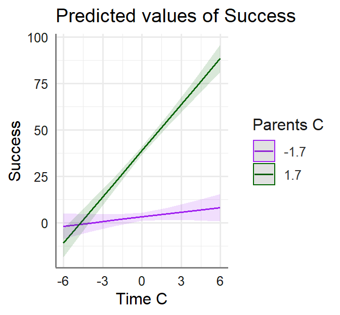
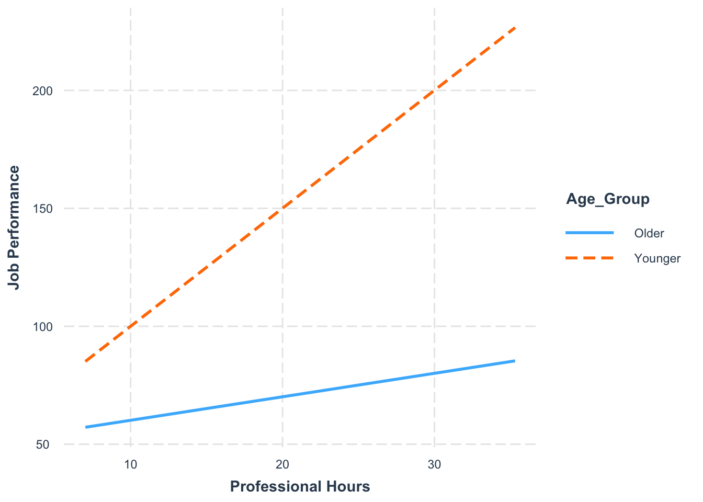
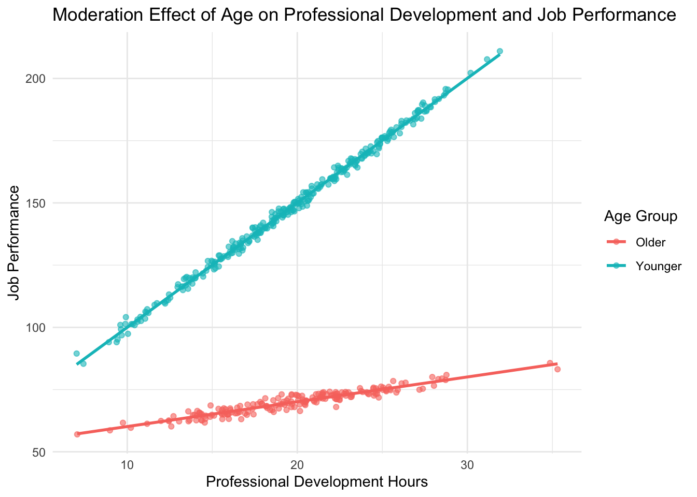
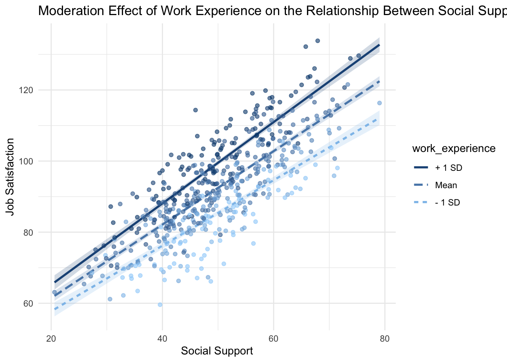
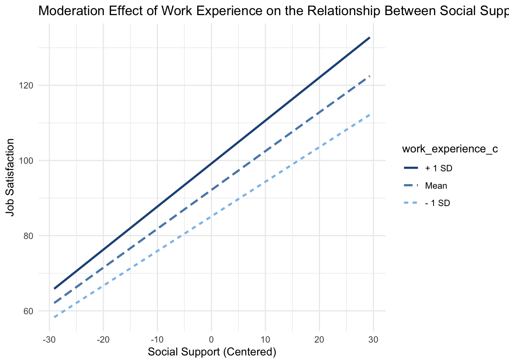
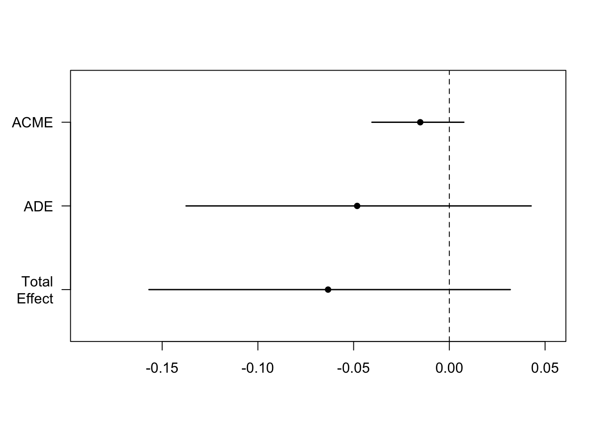
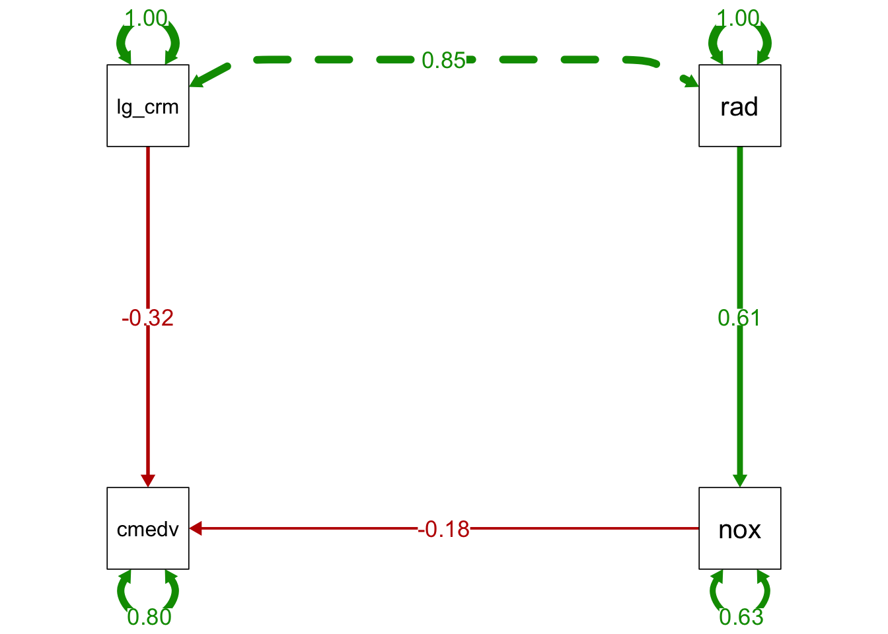
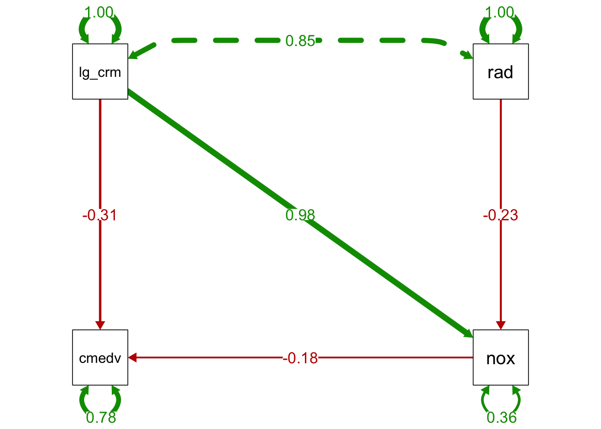
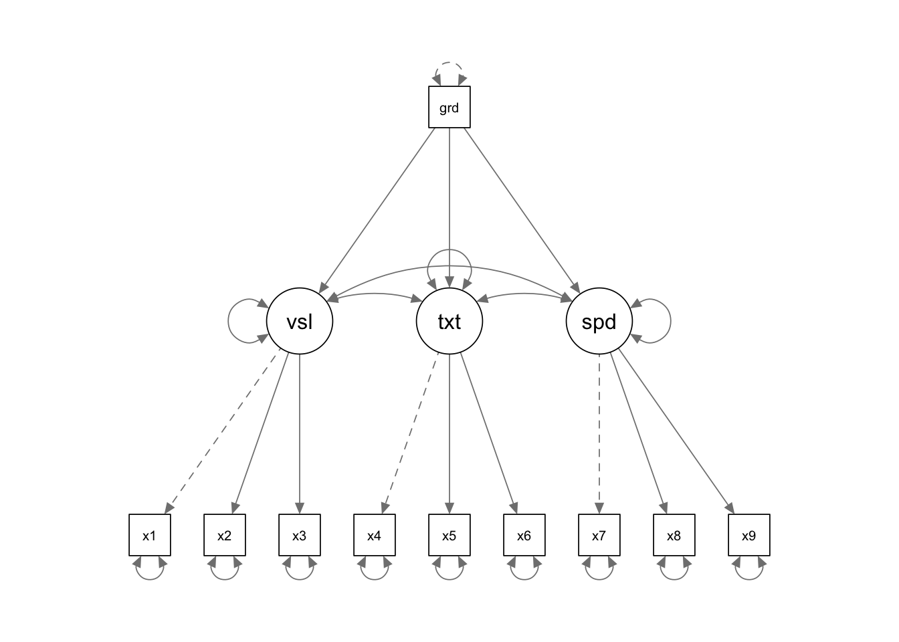

pacman::p_load(psych,lavaan,semTools,tidyverse,semTools,psych,tidyverse,lavaan,rio,parameters,
nFactors,EGAnet,PCDimension)EDUC 6003 Advanced Statistics
Chapter 1- Reliability Index Analysis
Introduction to Reliability Index Analysis
This tutorial will serve as a Guide to Enhanced Reliability Estimation with R
What is Reliability?
Reliability refers to the consistency and precision of measurement instruments. In psychological testing, it assesses the extent to which a test produces stable and consistent results.
Importance of Reliability
Measurement Precision: Ensures that the scores accurately reflect the true attributes being measured.
Research Validity: High reliability is a prerequisite for valid conclusions and replicable research findings.
Error Reduction: Minimizes the impact of random errors, enhancing the clarity of observed relationships between constructs.
Types of Reliability
Internal Consistency: Degree to which items within a test measure the same construct.
Test-Retest Reliability: Consistency of scores over time.
Inter-Rater Reliability: Agreement between different raters or observers.
Classical Test Theory (CTT) and Coefficient Alpha
Classical Test Theory Overview: CTT posits that each observed score is composed of a true score and an error score:
\[ X = T + E \]
where:
ùëã= Observed score ùëá= True score ùê∏= Error score
Coefficient Alpha (Cronbach’s Alpha)
This is a widely used measure of internal consistency reliability within CTT. It estimates the extent to which items on a test measure the same underlying construct.
\[ \alpha = \frac{N}{N-1} \left(1 - \frac{\sum \sigma^2_{E}}{\sigma^2_{X}}\right) \]
Where:
\(\alpha\) = Cronbach’s Alpha
ùëÅ = Number of items in the test
\(\sigma^2_{E}\) = Variance of the error scores
\(\sigma^2_{X}\) = Variance of the observed total scores
Assumptions of Alpha
Unidimensionality: All items measure a single construct.
Tau Equivalence: Each item has the same true score variance.
Independence of Errors: Error terms are uncorrelated across items.
Limitations of Alpha
Sensitivity to Tau Equivalence: Violations can lead to underestimation or overestimation of reliability.
Assumes Unidimensionality: Not suitable for multidimensional scales without adjustments.
Ignores Factor Structure: Does not account for the underlying factor model of the test.
Coefficient Omega
Coefficient Omega is a more robust alternative to Cronbach’s Alpha, especially when the assumption of tau-equivalence (equal factor loadings) is violated. Omega takes into account the factor structure of the test, making it suitable for both unidimensional and multidimensional scales.
Types of Omega
Omega Total (ωₜ): Accounts for all common factors, both general and specific.
Omega Hierarchical (ωₕ): Represents the proportion of variance attributable to a general factor alone.
Omega Total is given by:
\[ \omega_t = \frac{\sum_{i=1}^{k} \lambda_i}{\sum_{i=1}^{k} \lambda_i + \sum_{i=1}^{k} \theta_i} \]
Where:
\(\omega_t\) = Omega Total
\(\lambda_i\) = Factor loading for item
\(\theta_i\) = Unique variance (error variance) for item
\(k\) = Total number of items
For a hierarchical model, Omega Hierarchical is:
\[ \omega_h = \frac{\lambda_g^2}{\lambda_g^2 + \sum_{i=1}^{k} \theta_i} \]
where:
\(\omega_h\) = Omega Hierarchical
\(\lambda_g\) = Factor loading of the general factor
\(\theta_i\) = Unique variance for item \(i\)
Advantages of Omega Over Alpha
Factor Structure Incorporation: Utilizes confirmatory factor analysis (CFA) to model the underlying structure.
Less Sensitive to Tau Equivalence Violations: Provides more accurate reliability estimates when tau equivalence is not met.
Applicability to Multidimensional Scales: Suitable for tests measuring multiple constructs.
Calculations in R
Here, I will walk through the step-by-step process of calculating Cronbach’s Alpha and Coefficient Omega using R.
Load the necessary packages.
Loading the (BFI) dataset
The Big Five Inventory (BFI) is a widely used dataset in personality psychology, measuring the five major dimensions of personality. We’ll focus on the Openness trait for this tutorial.
# Make sure you've loaded the psych package
# Load the BFI dataset
data(bfi)
# load data file
bfi <- bfi
names(bfi) [1] "A1" "A2" "A3" "A4" "A5" "C1"
[7] "C2" "C3" "C4" "C5" "E1" "E2"
[13] "E3" "E4" "E5" "N1" "N2" "N3"
[19] "N4" "N5" "O1" "O2" "O3" "O4"
[25] "O5" "gender" "education" "age" # View the structure of the dataset
#str(bfi)The dataset contains 2,800 participants with various demographic and personality-related variables. A1 to A5 correspond to items measuring the Openness trait.
Selecting Openness Items
For this tutorial, we’ll focus on five items measuring the Openness trait. These items are typically labeled as A1 to A5 in the BFI dataset.
a. Extracting Openness Items
# Select columns that contain "O" in their names and remove rows with NA values
oppeness <- bfi %>%
select(matches("^O")) %>%
drop_na()
head(oppeness) O1 O2 O3 O4 O5
1 3 6 3 4 3
2 4 2 4 3 3
3 4 2 5 5 2
4 3 3 4 3 5
5 3 3 4 3 3
6 4 3 5 6 1Each A variable represents a Likert-type item measuring Openness. Responses range from 1 to 6, treated as continuous variables for analysis.
Handling Missing Data
Before we continue, let’s check any missing data.
# Check for missing values
sum(is.na(oppeness))[1] 0In this dataset, there are no missing values in the Openness items. If missing values were present, then we need to address that.
Calculating Cronbach’s Alpha
Recall that Cronbach’s Alpha (α) is a measure of internal consistency that measures how closely related a set of items are as a group.
a. We can use the psych Package in R
# Calculate Cronbach's Alpha using the psych package
#alpha_result <- psych::alpha(oppeness)
# Print the result
#print(alpha_result)Because some items were negatively correlated with the first principal component, we probably should reverse them.
# Reversing item O2 and O5
q <- c("O2","O5")
reverse <- function(x){
x.reversed <- 7 +0 - x
}
oppeness[, c("O2R", "O5R")] <- reverse(oppeness[,c("O2","O5")])
# compare original and reversed responses
oppeness[1:6,] O1 O2 O3 O4 O5 O2R O5R
1 3 6 3 4 3 1 4
2 4 2 4 3 3 5 4
3 4 2 5 5 2 5 5
4 3 3 4 3 5 4 2
5 3 3 4 3 3 4 4
6 4 3 5 6 1 4 6Now, we can compute the alpha
# compute alpha coefficient
alpha_result <- psych::alpha(oppeness[, -c(2,5)])
# Print the result
print(alpha_result)
Reliability analysis
Call: psych::alpha(x = oppeness[, -c(2, 5)])
raw_alpha std.alpha G6(smc) average_r S/N ase mean sd median_r
0.6 0.61 0.57 0.24 1.6 0.012 4.6 0.81 0.23
95% confidence boundaries
lower alpha upper
Feldt 0.58 0.6 0.63
Duhachek 0.58 0.6 0.63
Reliability if an item is dropped:
raw_alpha std.alpha G6(smc) average_r S/N alpha se var.r med.r
O1 0.54 0.54 0.48 0.23 1.2 0.014 0.0087 0.23
O3 0.50 0.50 0.44 0.20 1.0 0.015 0.0065 0.20
O4 0.61 0.62 0.56 0.29 1.7 0.012 0.0040 0.29
O2R 0.57 0.57 0.51 0.25 1.3 0.014 0.0077 0.21
O5R 0.52 0.53 0.48 0.22 1.1 0.015 0.0109 0.21
Item statistics
n raw.r std.r r.cor r.drop mean sd
O1 2726 0.61 0.65 0.51 0.39 4.8 1.1
O3 2726 0.68 0.69 0.59 0.45 4.4 1.2
O4 2726 0.50 0.52 0.29 0.22 4.9 1.2
O2R 2726 0.66 0.60 0.44 0.34 4.3 1.6
O5R 2726 0.67 0.66 0.52 0.42 4.5 1.3
Non missing response frequency for each item
1 2 3 4 5 6 miss
O1 0.01 0.04 0.08 0.22 0.33 0.33 0
O3 0.03 0.05 0.10 0.28 0.34 0.20 0
O4 0.02 0.05 0.06 0.17 0.32 0.39 0
O2R 0.06 0.10 0.15 0.14 0.26 0.29 0
O5R 0.02 0.07 0.13 0.19 0.32 0.27 0Explanation:
raw_alpha: The Cronbach’s Alpha coefficient.
std.alpha: Standardized alpha, similar to raw_alpha.
G6(smc): Generalizability theory estimate with squared multiple correlations.
average_r: Average inter-item correlation.
S/N: Signal-to-noise ratio.
ase: Asymptotic standard error.
Confidence Intervals: Lower and upper bounds for alpha.
As we can see, the Cronbach’s Alpha for the Openness items is 0.6, indicating strong internal consistency. The average inter-item correlation is 0.24, moderate and within psychological scales.
Confirmatory Factor Analysis (CFA)
Confirmatory Factor Analysis (CFA) is used to verify the factor structure of a set of observed variables. In our case, we assume a unidimensional structure.
a. Specifying the CFA Model
Let’s specify a one-factor model where all items load on a single latent factor.
# Specify model
mod1f <- "
openness =~ O1 + O2R + O3 + O4 + O5R
"b. Fitting the CFA Model
Fit the Model Using lavaan:
#pacman::p_load(lavaan)
# Estimate model
fit.one.f <- cfa(mod1f, data=oppeness, std.lv=T, missing='direct',
estimator='MLR')
# The results can be viewed using the summary
summary(fit.one.f, fit.measures=T, standardized=T)lavaan 0.6-19 ended normally after 22 iterations
Estimator ML
Optimization method NLMINB
Number of model parameters 15
Number of observations 2726
Number of missing patterns 1
Model Test User Model:
Standard Scaled
Test Statistic 80.583 67.248
Degrees of freedom 5 5
P-value (Chi-square) 0.000 0.000
Scaling correction factor 1.198
Yuan-Bentler correction (Mplus variant)
Model Test Baseline Model:
Test statistic 1375.389 1049.226
Degrees of freedom 10 10
P-value 0.000 0.000
Scaling correction factor 1.311
User Model versus Baseline Model:
Comparative Fit Index (CFI) 0.945 0.940
Tucker-Lewis Index (TLI) 0.889 0.880
Robust Comparative Fit Index (CFI) 0.946
Robust Tucker-Lewis Index (TLI) 0.891
Loglikelihood and Information Criteria:
Loglikelihood user model (H0) -22078.661 -22078.661
Scaling correction factor 1.167
for the MLR correction
Loglikelihood unrestricted model (H1) -22038.369 -22038.369
Scaling correction factor 1.174
for the MLR correction
Akaike (AIC) 44187.322 44187.322
Bayesian (BIC) 44275.980 44275.980
Sample-size adjusted Bayesian (SABIC) 44228.321 44228.321
Root Mean Square Error of Approximation:
RMSEA 0.074 0.068
90 Percent confidence interval - lower 0.061 0.055
90 Percent confidence interval - upper 0.089 0.081
P-value H_0: RMSEA <= 0.050 0.002 0.012
P-value H_0: RMSEA >= 0.080 0.280 0.066
Robust RMSEA 0.074
90 Percent confidence interval - lower 0.058
90 Percent confidence interval - upper 0.090
P-value H_0: Robust RMSEA <= 0.050 0.006
P-value H_0: Robust RMSEA >= 0.080 0.285
Standardized Root Mean Square Residual:
SRMR 0.029 0.029
Parameter Estimates:
Standard errors Sandwich
Information bread Observed
Observed information based on Hessian
Latent Variables:
Estimate Std.Err z-value P(>|z|) Std.lv Std.all
openness =~
O1 0.616 0.029 21.346 0.000 0.616 0.546
O2R 0.701 0.041 17.170 0.000 0.701 0.449
O3 0.792 0.032 24.649 0.000 0.792 0.649
O4 0.357 0.030 11.749 0.000 0.357 0.294
O5R 0.685 0.036 19.194 0.000 0.685 0.517
Intercepts:
Estimate Std.Err z-value P(>|z|) Std.lv Std.all
.O1 4.819 0.022 223.110 0.000 4.819 4.273
.O2R 4.300 0.030 143.782 0.000 4.300 2.754
.O3 4.439 0.023 189.916 0.000 4.439 3.637
.O4 4.898 0.023 210.231 0.000 4.898 4.027
.O5R 4.516 0.025 177.976 0.000 4.516 3.409
Variances:
Estimate Std.Err z-value P(>|z|) Std.lv Std.all
.O1 0.893 0.037 23.923 0.000 0.893 0.702
.O2R 1.947 0.068 28.607 0.000 1.947 0.798
.O3 0.862 0.050 17.172 0.000 0.862 0.579
.O4 1.352 0.052 25.967 0.000 1.352 0.914
.O5R 1.286 0.059 21.822 0.000 1.286 0.732
openness 1.000 1.000 1.000Explanation:
Estimator: Maximum Likelihood (ML).
Test Statistics: The Chi-square test is significant (ùëù<0.001), indicating a poor fit.
Fit Indices:
CFI (0.94): above 0.90.
TLI (0.88): Below the threshold of 0.90.
RMSEA (0.068): Indicates relatively weak fit (≥0.05).
SRMR (0.029): Great fit (≤0.08).
residuals(fit.one.f, type='cor')$type
[1] "cor.bollen"
$cov
O1 O2R O3 O4 O5R
O1 0.000
O2R -0.026 0.000
O3 0.037 -0.024 0.000
O4 0.013 -0.052 0.000 0.000
O5R -0.044 0.090 -0.022 0.027 0.000
$mean
O1 O2R O3 O4 O5R
0 0 0 0 0 The fit statistics from the Robust column in the summary suggest that this one-factor model provides a moderate fit to the data. While the Comparative Fit Index (CFI) of 0.94 indicates an acceptable fit, the Tucker-Lewis Index (TLI) of 0.88 is relatively lower, and the Root Mean Square Error of Approximation (RMSEA) is relatively high at 0.08.
The factor loadings (ùúÜÃÇ) show significant variation, ranging from 0.357 to 0.792, which implies that the assumption of equal loadings (tau equivalence) does not hold for this openness test. As a result, omega (œâu) should be a more suitable measure of reliability than Cronbach‚Äôs alpha. We can compute the œâu estimate by running the reliability function from the semTools package on the one-factor model object (fit1f).
reliability(fit.one.f) openness
alpha 0.6025464
omega 0.6103741
omega2 0.6103741
omega3 0.6098642
avevar 0.2484010omega and omega2 measure reliability based on the variance expected by the model, while omega3 measures it based on the actual variance seen in your data. The small difference between omega and omega3 suggests that the model’s predictions of variance are somewhat close to what’s observed in the sample.
Calculating Categorical Omega
Recall that Coefficient Omega (ω) is a reliability estimate that accounts for the factor structure of the test, providing a more accurate measure than Cronbach’s Alpha, especially in the presence of multidimensionality or when tau-equivalence is violated.
Since factor loadings derived from polychoric correlations represent the link between the factor and the underlying latent response variables (not the actual responses from the items), using the ωu formula here would tell us how much of the variance in the latent response variables is explained by the factor. However, this doesn’t reflect the true variance in the sum of the observed item responses. Essentially, in this case, ωu would give us the reliability of a hypothetical total score based on the latent variables rather than the actual observed total score.
To correct for this, Green and Yang (2009b) proposed a new reliability estimate called ωu-cat, which adjusts the reliability calculation to align with the observed total score. This estimate is more accurate for unidimensional scales with categorical items, especially when the response patterns vary across items.
Since the psychoticism items use a 4-point rating scale, I fit the one-factor model using polychoric correlations and the WLSMV estimator (weighted least squares with mean and variance adjustment). This approach is recommended for confirmatory factor analysis involving polychoric correlations, as it is more robust than the maximum likelihood (ML) estimator.
#load the data
potic <- import("data/potic.csv")
# Specify model
mod.one.fCat <- 'psyctcsm =~ DDP1 + DDP2 +
DDP3 + DDP4'
# Estimate model
fit.one.fCat <- cfa(mod.one.fCat, data=potic, std.lv=TRUE, ordered=T, estimator='WLSMV')
# Retrieving the results
summary(fit.one.fCat, fit.measures=TRUE, standardized=TRUE)lavaan 0.6-19 ended normally after 10 iterations
Estimator DWLS
Optimization method NLMINB
Number of model parameters 20
Used Total
Number of observations 498 500
Model Test User Model:
Standard Scaled
Test Statistic 7.117 14.910
Degrees of freedom 2 2
P-value (Chi-square) 0.028 0.001
Scaling correction factor 0.480
Shift parameter 0.089
simple second-order correction
Model Test Baseline Model:
Test statistic 1635.647 1316.086
Degrees of freedom 6 6
P-value 0.000 0.000
Scaling correction factor 1.244
User Model versus Baseline Model:
Comparative Fit Index (CFI) 0.997 0.990
Tucker-Lewis Index (TLI) 0.991 0.970
Robust Comparative Fit Index (CFI) 0.969
Robust Tucker-Lewis Index (TLI) 0.908
Root Mean Square Error of Approximation:
RMSEA 0.072 0.114
90 Percent confidence interval - lower 0.020 0.065
90 Percent confidence interval - upper 0.132 0.171
P-value H_0: RMSEA <= 0.050 0.200 0.019
P-value H_0: RMSEA >= 0.080 0.479 0.880
Robust RMSEA 0.147
90 Percent confidence interval - lower 0.089
90 Percent confidence interval - upper 0.213
P-value H_0: Robust RMSEA <= 0.050 0.004
P-value H_0: Robust RMSEA >= 0.080 0.970
Standardized Root Mean Square Residual:
SRMR 0.033 0.033
Parameter Estimates:
Parameterization Delta
Standard errors Robust.sem
Information Expected
Information saturated (h1) model Unstructured
Latent Variables:
Estimate Std.Err z-value P(>|z|) Std.lv Std.all
psyctcsm =~
DDP1 0.894 0.028 31.538 0.000 0.894 0.894
DDP2 0.753 0.028 26.711 0.000 0.753 0.753
DDP3 0.698 0.030 23.314 0.000 0.698 0.698
DDP4 0.513 0.040 12.738 0.000 0.513 0.513
Thresholds:
Estimate Std.Err z-value P(>|z|) Std.lv Std.all
DDP1|t1 -0.716 0.062 -11.591 0.000 -0.716 -0.716
DDP1|t2 -0.040 0.056 -0.716 0.474 -0.040 -0.040
DDP1|t3 0.296 0.057 5.185 0.000 0.296 0.296
DDP1|t4 1.034 0.069 15.065 0.000 1.034 1.034
DDP2|t1 -0.580 0.060 -9.693 0.000 -0.580 -0.580
DDP2|t2 0.208 0.057 3.668 0.000 0.208 0.208
DDP2|t3 0.562 0.060 9.431 0.000 0.562 0.562
DDP2|t4 1.096 0.070 15.570 0.000 1.096 1.096
DDP3|t1 -1.203 0.074 -16.298 0.000 -1.203 -1.203
DDP3|t2 -0.425 0.058 -7.318 0.000 -0.425 -0.425
DDP3|t3 0.081 0.056 1.432 0.152 0.081 0.081
DDP3|t4 0.913 0.066 13.909 0.000 0.913 0.913
DDP4|t1 -1.605 0.092 -17.382 0.000 -1.605 -1.605
DDP4|t2 -1.060 0.069 -15.285 0.000 -1.060 -1.060
DDP4|t3 -0.521 0.059 -8.817 0.000 -0.521 -0.521
DDP4|t4 0.431 0.058 7.406 0.000 0.431 0.431
Variances:
Estimate Std.Err z-value P(>|z|) Std.lv Std.all
.DDP1 0.201 0.201 0.201
.DDP2 0.433 0.433 0.433
.DDP3 0.513 0.513 0.513
.DDP4 0.737 0.737 0.737
psyctcsm 1.000 1.000 1.000# Estimate reliability
reliability(fit.one.fCat)For constructs with categorical indicators, Zumbo et al.`s (2007) "ordinal alpha" is calculated in addition to the standard alpha, which treats ordinal variables as numeric. See Chalmers (2018) for a critique of "alpha.ord" and the response by Zumbo & Kroc (2019). Likewise, average variance extracted is calculated from polychoric (polyserial) not Pearson correlations. psyctcsm
alpha 0.7680870
alpha.ord 0.8007496
omega 0.7902953
omega2 0.7902953
omega3 0.7932682
avevar 0.5289638We can see that we have two estimates Cronbach’s alpha and differ a bit (0.80 & 0.77). The is because the 2nd alpha estimate is an example of ordinal alpha, which is calculated using a model based on polychoric correlations, while the first alpha was derived using the standard method based on product-moment covariances between the items. It’s important to note that ordinal alpha measures the reliability of the sum of the continuous, latent-response variables rather than the observed categorical item responses. Additionally, it still assumes equal factor loadings (tau equivalence). Because of these limitations, I suggest disregarding the alpha value reported by semTools::reliability when the model uses polychoric correlations.
The values shown in the omega and omega2 rows represent the ωu-cat estimate. The omega3 row shows a variation where the denominator uses the observed sample variance of ( X ). So, we can see ωu-cat estimates suggest that 79% of the variance in the total score for the psychoticism scale is explained by the single psychoticism factor.
Bifactor Models
A bifactor model is a useful way to represent a multidimensional structure. In this model, there’s a general factor that affects all items, while additional specific factors (or group factors) explain the relationships (covariation) between certain subsets of items beyond what the general factor accounts for.
For the model to work correctly, the general factor needs to be uncorrelated with the specific factors. In contrast to other Confirmatory Factor Analysis (CFA) models where all factors can correlate freely, allowing the general factor to correlate with a specific factor in a bifactor model can lead to issues like non-convergence or incorrect solutions.
Omega Hierarchical (ωh)
When data fits well with a bifactor model, a reliability metric called omega hierarchical (\(ω_h\)) is used. This measure reflects how much of the total score’s variance is attributable to the single general factor, even though the data involves multiple dimensions.
Here, let’s demonstrate the estimation of \(ω_h\) using R, I use data that from Flake, Ferland, & Flora, 2017 collected by administering the PCS to 154 students in an introductory statistics course.
pcs <- import("data/pcs.csv")
names(pcs) [1] "TE1" "TE2" "TE3" "TE4" "TE5" "OE1" "OE2" "OE3" "OE4" "LVA1"
[11] "LVA2" "LVA3" "LVA4" "EM1" "EM2" "EM3" "EM4" "EM5" "EM6" modBf <- "
gen =~ TE1+TE2+TE3+TE4+TE5+OE1+OE2+OE3+OE4+LVA1+LVA2+LVA3+LVA4 +EM1+EM2+EM3+EM4+EM5+EM6
s1 =~ TE1 + TE2 + TE3 + TE4 + TE5
s2 =~ OE1 + OE2 + OE3 + OE4
s3 =~ LVA1 + LVA2 + LVA3 + LVA4
s4 =~ EM1 + EM2 + EM3 + EM4 + EM5 + EM6
"
#Specify model
fitBf <- cfa(modBf, data=pcs, std.lv=T, estimator='MLR', orthogonal=T)
#Retrieving the results
summary(fitBf, fit.measures=TRUE, standardized=T)lavaan 0.6-19 ended normally after 36 iterations
Estimator ML
Optimization method NLMINB
Number of model parameters 57
Used Total
Number of observations 154 172
Model Test User Model:
Standard Scaled
Test Statistic 211.382 182.509
Degrees of freedom 133 133
P-value (Chi-square) 0.000 0.003
Scaling correction factor 1.158
Yuan-Bentler correction (Mplus variant)
Model Test Baseline Model:
Test statistic 2799.877 2260.239
Degrees of freedom 171 171
P-value 0.000 0.000
Scaling correction factor 1.239
User Model versus Baseline Model:
Comparative Fit Index (CFI) 0.970 0.976
Tucker-Lewis Index (TLI) 0.962 0.970
Robust Comparative Fit Index (CFI) 0.978
Robust Tucker-Lewis Index (TLI) 0.972
Loglikelihood and Information Criteria:
Loglikelihood user model (H0) -3456.819 -3456.819
Scaling correction factor 1.269
for the MLR correction
Loglikelihood unrestricted model (H1) -3351.128 -3351.128
Scaling correction factor 1.191
for the MLR correction
Akaike (AIC) 7027.638 7027.638
Bayesian (BIC) 7200.744 7200.744
Sample-size adjusted Bayesian (SABIC) 7020.331 7020.331
Root Mean Square Error of Approximation:
RMSEA 0.062 0.049
90 Percent confidence interval - lower 0.046 0.031
90 Percent confidence interval - upper 0.077 0.065
P-value H_0: RMSEA <= 0.050 0.108 0.520
P-value H_0: RMSEA >= 0.080 0.025 0.000
Robust RMSEA 0.053
90 Percent confidence interval - lower 0.032
90 Percent confidence interval - upper 0.071
P-value H_0: Robust RMSEA <= 0.050 0.387
P-value H_0: Robust RMSEA >= 0.080 0.005
Standardized Root Mean Square Residual:
SRMR 0.038 0.038
Parameter Estimates:
Standard errors Sandwich
Information bread Observed
Observed information based on Hessian
Latent Variables:
Estimate Std.Err z-value P(>|z|) Std.lv Std.all
gen =~
TE1 1.041 0.071 14.715 0.000 1.041 0.843
TE2 1.045 0.084 12.430 0.000 1.045 0.794
TE3 0.848 0.090 9.392 0.000 0.848 0.721
TE4 0.984 0.075 13.097 0.000 0.984 0.834
TE5 1.004 0.082 12.264 0.000 1.004 0.819
OE1 0.787 0.083 9.537 0.000 0.787 0.631
OE2 0.819 0.080 10.207 0.000 0.819 0.695
OE3 0.738 0.089 8.319 0.000 0.738 0.605
OE4 0.742 0.087 8.512 0.000 0.742 0.636
LVA1 0.937 0.084 11.180 0.000 0.937 0.796
LVA2 0.863 0.071 12.205 0.000 0.863 0.797
LVA3 0.816 0.085 9.649 0.000 0.816 0.719
LVA4 0.865 0.098 8.802 0.000 0.865 0.695
EM1 0.968 0.095 10.215 0.000 0.968 0.715
EM2 0.930 0.078 11.957 0.000 0.930 0.800
EM3 0.959 0.091 10.542 0.000 0.959 0.731
EM4 0.885 0.091 9.679 0.000 0.885 0.732
EM5 1.043 0.086 12.121 0.000 1.043 0.816
EM6 1.108 0.100 11.054 0.000 1.108 0.750
s1 =~
TE1 0.351 0.114 3.071 0.002 0.351 0.285
TE2 0.451 0.144 3.142 0.002 0.451 0.343
TE3 0.402 0.170 2.360 0.018 0.402 0.342
TE4 0.162 0.111 1.457 0.145 0.162 0.137
TE5 0.269 0.154 1.747 0.081 0.269 0.219
s2 =~
OE1 0.626 0.107 5.860 0.000 0.626 0.502
OE2 0.516 0.096 5.399 0.000 0.516 0.438
OE3 0.673 0.107 6.291 0.000 0.673 0.552
OE4 0.739 0.085 8.738 0.000 0.739 0.634
s3 =~
LVA1 0.253 0.107 2.357 0.018 0.253 0.215
LVA2 0.573 0.081 7.081 0.000 0.573 0.529
LVA3 0.422 0.104 4.051 0.000 0.422 0.372
LVA4 0.528 0.104 5.074 0.000 0.528 0.424
s4 =~
EM1 0.506 0.152 3.324 0.001 0.506 0.374
EM2 0.346 0.086 4.026 0.000 0.346 0.298
EM3 0.567 0.121 4.682 0.000 0.567 0.432
EM4 0.562 0.098 5.707 0.000 0.562 0.464
EM5 0.479 0.097 4.930 0.000 0.479 0.375
EM6 0.651 0.148 4.403 0.000 0.651 0.440
Covariances:
Estimate Std.Err z-value P(>|z|) Std.lv Std.all
gen ~~
s1 0.000 0.000 0.000
s2 0.000 0.000 0.000
s3 0.000 0.000 0.000
s4 0.000 0.000 0.000
s1 ~~
s2 0.000 0.000 0.000
s3 0.000 0.000 0.000
s4 0.000 0.000 0.000
s2 ~~
s3 0.000 0.000 0.000
s4 0.000 0.000 0.000
s3 ~~
s4 0.000 0.000 0.000
Variances:
Estimate Std.Err z-value P(>|z|) Std.lv Std.all
.TE1 0.318 0.067 4.777 0.000 0.318 0.209
.TE2 0.434 0.088 4.913 0.000 0.434 0.251
.TE3 0.501 0.104 4.827 0.000 0.501 0.363
.TE4 0.397 0.066 5.987 0.000 0.397 0.285
.TE5 0.421 0.073 5.799 0.000 0.421 0.281
.OE1 0.546 0.106 5.129 0.000 0.546 0.350
.OE2 0.451 0.075 6.003 0.000 0.451 0.325
.OE3 0.490 0.117 4.183 0.000 0.490 0.330
.OE4 0.263 0.071 3.718 0.000 0.263 0.194
.LVA1 0.442 0.064 6.873 0.000 0.442 0.320
.LVA2 0.100 0.062 1.607 0.108 0.100 0.085
.LVA3 0.443 0.075 5.892 0.000 0.443 0.344
.LVA4 0.523 0.088 5.954 0.000 0.523 0.337
.EM1 0.639 0.100 6.388 0.000 0.639 0.349
.EM2 0.365 0.060 6.049 0.000 0.365 0.271
.EM3 0.482 0.090 5.383 0.000 0.482 0.280
.EM4 0.364 0.083 4.395 0.000 0.364 0.249
.EM5 0.318 0.063 5.032 0.000 0.318 0.195
.EM6 0.534 0.117 4.564 0.000 0.534 0.244
gen 1.000 1.000 1.000
s1 1.000 1.000 1.000
s2 1.000 1.000 1.000
s3 1.000 1.000 1.000
s4 1.000 1.000 1.000fitmeasures(fitBf) npar fmin
57.000 0.686
chisq df
211.382 133.000
pvalue chisq.scaled
0.000 182.509
df.scaled pvalue.scaled
133.000 0.003
chisq.scaling.factor baseline.chisq
1.158 2799.877
baseline.df baseline.pvalue
171.000 0.000
baseline.chisq.scaled baseline.df.scaled
2260.239 171.000
baseline.pvalue.scaled baseline.chisq.scaling.factor
0.000 1.239
cfi tli
0.970 0.962
cfi.scaled tli.scaled
0.976 0.970
cfi.robust tli.robust
0.978 0.972
nnfi rfi
0.962 0.903
nfi pnfi
0.925 0.719
ifi rni
0.971 0.970
nnfi.scaled rfi.scaled
0.970 0.896
nfi.scaled pnfi.scaled
0.919 0.715
ifi.scaled rni.scaled
0.977 0.976
nnfi.robust rni.robust
0.972 0.978
logl unrestricted.logl
-3456.819 -3351.128
aic bic
7027.638 7200.744
ntotal bic2
154.000 7020.331
scaling.factor.h1 scaling.factor.h0
1.191 1.269
rmsea rmsea.ci.lower
0.062 0.046
rmsea.ci.upper rmsea.ci.level
0.077 0.900
rmsea.pvalue rmsea.close.h0
0.108 0.050
rmsea.notclose.pvalue rmsea.notclose.h0
0.025 0.080
rmsea.scaled rmsea.ci.lower.scaled
0.049 0.031
rmsea.ci.upper.scaled rmsea.pvalue.scaled
0.065 0.520
rmsea.notclose.pvalue.scaled rmsea.robust
0.000 0.053
rmsea.ci.lower.robust rmsea.ci.upper.robust
0.032 0.071
rmsea.pvalue.robust rmsea.notclose.pvalue.robust
0.387 0.005
rmr rmr_nomean
0.056 0.056
srmr srmr_bentler
0.038 0.038
srmr_bentler_nomean crmr
0.038 0.040
crmr_nomean srmr_mplus
0.040 0.038
srmr_mplus_nomean cn_05
0.038 118.233
cn_01 gfi
127.659 0.877
agfi pgfi
0.824 0.614
mfi ecvi
0.775 2.113 From the results above, we can the bifactor model fits the PCS data well, with robust model-fit statistics, CFI = 0.978, TLI = 0.972, RMSEA = 0.053. Thus, it is reasonable to calculate \(ω_h\) to estimate how reliably the PCS total score measures the general psychological-cost factor.
reliability(fitBf) gen s1 s2 s3 s4
alpha 0.9638781 0.92504205 0.8992820 0.9052459 0.9405882
omega 0.9741033 0.56377307 0.7884791 0.6766430 0.7816839
omega2 0.9094893 0.09237594 0.3666293 0.1880759 0.2054075
omega3 0.9077636 0.09240479 0.3666634 0.1878380 0.2053012
avevar NA NA NA NA NAThe values shown under the “gen” column relate to the general psychological cost factor. The omega estimate (0.974) doesn’t take the specific factors into account when calculating the variance of the total score, so it’s not the appropriate reliability measure for the PCS total score. Instead, the omega2 and omega3 values under “gen” represent omega hierarchical (\(ω_h\)). The difference between them is that omega2 uses the model-implied variance of the total score, while omega3 relies on the observed variance from the sample.
In simple terms, both \(ω_h\) values tell us that 91% of the variance in the PCS total score is explained by the general psychological cost factor, after accounting for the specific factors that influence different content areas.
Higher-Order Models
In the bifactor model example, I treated the multidimensional nature of the PCS items as a distraction when measuring a broad, general psychological cost construct. However, in other cases, researchers may propose a different structure where a broad overarching factor indirectly influences all the test items by acting through more specific, narrower constructs that directly affect different subsets of items. This kind of setup suggests a higher-order model, where a higher-order (or second-order) factor drives differences in several lower-order (first-order) factors, which, in turn, influence the individual item responses.
In this model, researchers assess how well the test captures both the overall score (reflecting the broad higher-order construct) and the subscale scores (reflecting the more specific lower-order constructs).
When the data fit a higher-order model, the reliability of the total score is measured by omega-higher-order (\(ω_{ho}\)), which represents the proportion of the total score’s variance that can be attributed to the higher-order factor. The calculation of ωho uses parameter estimates from the higher-order model.
#Specify the higher-order factor model for the PCS items
homod <- 'TE =~ TE1 + TE2 + TE3 + TE4 + TE5
OE =~ OE1 + OE2 + OE3 + OE4
LV =~ LVA1 + LVA2 + LVA3 + LVA4
EM =~ EM1 + EM2 + EM3 + EM4 + EM5 + EM6
cost =~ TE + OE + LV + EM'#Estimate the model and get the results
fitHo <- cfa(homod, data=pcs, std.lv=T, estimator='MLM')
summary(fitHo, fit.measures=T)lavaan 0.6-19 ended normally after 57 iterations
Estimator ML
Optimization method NLMINB
Number of model parameters 42
Used Total
Number of observations 154 172
Model Test User Model:
Standard Scaled
Test Statistic 243.444 185.699
Degrees of freedom 148 148
P-value (Chi-square) 0.000 0.019
Scaling correction factor 1.311
Satorra-Bentler correction
Model Test Baseline Model:
Test statistic 2799.877 2282.637
Degrees of freedom 171 171
P-value 0.000 0.000
Scaling correction factor 1.227
User Model versus Baseline Model:
Comparative Fit Index (CFI) 0.964 0.982
Tucker-Lewis Index (TLI) 0.958 0.979
Robust Comparative Fit Index (CFI) 0.981
Robust Tucker-Lewis Index (TLI) 0.978
Loglikelihood and Information Criteria:
Loglikelihood user model (H0) -3472.850 -3472.850
Loglikelihood unrestricted model (H1) -3351.128 -3351.128
Akaike (AIC) 7029.700 7029.700
Bayesian (BIC) 7157.252 7157.252
Sample-size adjusted Bayesian (SABIC) 7024.315 7024.315
Root Mean Square Error of Approximation:
RMSEA 0.065 0.041
90 Percent confidence interval - lower 0.050 0.021
90 Percent confidence interval - upper 0.079 0.056
P-value H_0: RMSEA <= 0.050 0.052 0.832
P-value H_0: RMSEA >= 0.080 0.039 0.000
Robust RMSEA 0.047
90 Percent confidence interval - lower 0.020
90 Percent confidence interval - upper 0.066
P-value H_0: Robust RMSEA <= 0.050 0.592
P-value H_0: Robust RMSEA >= 0.080 0.002
Standardized Root Mean Square Residual:
SRMR 0.045 0.045
Parameter Estimates:
Standard errors Robust.sem
Information Expected
Information saturated (h1) model Structured
Latent Variables:
Estimate Std.Err z-value P(>|z|)
TE =~
TE1 0.356 0.067 5.289 0.000
TE2 0.364 0.065 5.554 0.000
TE3 0.299 0.059 5.056 0.000
TE4 0.323 0.058 5.605 0.000
TE5 0.338 0.065 5.198 0.000
OE =~
OE1 0.641 0.074 8.642 0.000
OE2 0.616 0.060 10.334 0.000
OE3 0.630 0.066 9.523 0.000
OE4 0.647 0.064 10.078 0.000
LV =~
LVA1 0.442 0.056 7.836 0.000
LVA2 0.457 0.059 7.751 0.000
LVA3 0.427 0.059 7.286 0.000
LVA4 0.460 0.056 8.258 0.000
EM =~
EM1 0.509 0.069 7.394 0.000
EM2 0.462 0.066 7.018 0.000
EM3 0.517 0.074 6.955 0.000
EM4 0.483 0.067 7.179 0.000
EM5 0.535 0.069 7.756 0.000
EM6 0.595 0.080 7.430 0.000
cost =~
TE 2.914 0.595 4.894 0.000
OE 1.223 0.155 7.880 0.000
LV 1.951 0.281 6.933 0.000
EM 1.900 0.327 5.809 0.000
Variances:
Estimate Std.Err z-value P(>|z|)
.TE1 0.321 0.063 5.081 0.000
.TE2 0.473 0.069 6.837 0.000
.TE3 0.531 0.100 5.289 0.000
.TE4 0.398 0.073 5.494 0.000
.TE5 0.418 0.070 5.935 0.000
.OE1 0.531 0.099 5.353 0.000
.OE2 0.440 0.081 5.428 0.000
.OE3 0.495 0.099 5.001 0.000
.OE4 0.315 0.055 5.719 0.000
.LVA1 0.443 0.081 5.466 0.000
.LVA2 0.170 0.035 4.851 0.000
.LVA3 0.412 0.064 6.473 0.000
.LVA4 0.533 0.090 5.945 0.000
.EM1 0.637 0.085 7.508 0.000
.EM2 0.367 0.062 5.872 0.000
.EM3 0.493 0.075 6.564 0.000
.EM4 0.387 0.064 6.017 0.000
.EM5 0.315 0.062 5.059 0.000
.EM6 0.554 0.085 6.515 0.000
.TE 1.000
.OE 1.000
.LV 1.000
.EM 1.000
cost 1.000 Let’s obtain omega-ho from a higher-order model for the Psychological Cost Scale
reliabilityL2(fitHo, 'cost') omegaL1 omegaL2 partialOmegaL1
0.9088176 0.9410190 0.9734520 #Obtain omega estimates for the subscale scores as measures of the lower-order factors
reliability(fitHo) TE OE LV EM
alpha 0.9250420 0.8992820 0.9052459 0.9405882
omega 0.9260209 0.9000548 0.9077522 0.9415490
omega2 0.9260209 0.9000548 0.9077522 0.9415490
omega3 0.9256773 0.9014397 0.9125259 0.9404921
avevar 0.7155347 0.6925123 0.7111716 0.7299181Exploratory Omega Estimates
So far, the examples have relied on semTools’ reliability (or reliabilityL2) function to calculate omega estimates based on CFA models. However, these omega estimates are only valid if the underlying model for the test is correctly specified. For instance, using \(ω_u\) as a reliability estimate wouldn’t be appropriate if the true model is multidimensional, as indicated by a poor fit for a single-factor model.
When a hypothesized CFA model doesn’t adequately fit the data—which is common in the early stages of test development—Exploratory Factor Analysis (EFA) can help identify the test’s dimensional structure. After determining the optimal number of factors for a test, you can use the omega function from the psych package (Revelle, 2020) to estimate omega based on the EFA parameters. This estimate will reflect the proportion of total score variance attributable to a general factor that influences all items.
#Determine number of factors
n_factors(pcs, package = "all")# Method Agreement Procedure:
The choice of 4 dimensions is supported by 7 (25.93%) methods out of 27 (beta, Scree (SE), EGA (glasso), Velicer's MAP, BIC, Fit_off, BIC).#Determine omega for 4 factor model
omega(pcs, nfactors = 4, plot = F)Loading required namespace: GPArotationOmega
Call: omegah(m = m, nfactors = nfactors, fm = fm, key = key, flip = flip,
digits = digits, title = title, sl = sl, labels = labels,
plot = plot, n.obs = n.obs, rotate = rotate, Phi = Phi, option = option,
covar = covar)
Alpha: 0.96
G.6: 0.98
Omega Hierarchical: 0.85
Omega H asymptotic: 0.88
Omega Total 0.98
Schmid Leiman Factor loadings greater than 0.2
g F1* F2* F3* F4* h2 h2 u2 p2 com
TE1 0.81 0.39 0.81 0.81 0.19 0.80 1.50
TE2 0.76 0.40 0.75 0.75 0.25 0.77 1.53
TE3 0.70 0.35 0.62 0.62 0.38 0.80 1.52
TE4 0.78 0.29 0.72 0.72 0.28 0.84 1.41
TE5 0.77 0.34 0.74 0.74 0.26 0.80 1.46
OE1 0.61 0.55 0.67 0.67 0.33 0.56 2.02
OE2 0.67 0.46 0.66 0.66 0.34 0.68 1.81
OE3 0.61 0.54 0.68 0.68 0.32 0.54 2.02
OE4 0.63 0.62 0.80 0.80 0.20 0.50 2.02
LVA1 0.75 0.28 0.67 0.67 0.33 0.85 1.37
LVA2 0.80 0.48 0.87 0.87 0.13 0.73 1.66
LVA3 0.71 0.20 0.37 0.71 0.71 0.29 0.72 1.69
LVA4 0.70 0.43 0.67 0.67 0.33 0.72 1.68
EM1 0.69 0.39 0.66 0.66 0.34 0.73 1.64
EM2 0.76 0.38 0.75 0.75 0.25 0.77 1.57
EM3 0.72 0.47 0.73 0.73 0.27 0.71 1.76
EM4 0.72 0.48 0.74 0.74 0.26 0.70 1.76
EM5 0.78 0.43 0.81 0.81 0.19 0.76 1.59
EM6 0.73 0.48 0.78 0.78 0.22 0.68 1.78
With Sums of squares of:
g F1* F2* F3* F4* h2
9.95 1.21 1.29 0.70 0.68 10.16
general/max 0.98 max/min = 14.84
mean percent general = 0.72 with sd = 0.1 and cv of 0.13
Explained Common Variance of the general factor = 0.72
The degrees of freedom are 101 and the fit is 1
The number of observations was 172 with Chi Square = 161.11 with prob < 0.00013
The root mean square of the residuals is 0.02
The df corrected root mean square of the residuals is 0.03
RMSEA index = 0.059 and the 10 % confidence intervals are 0.041 0.076
BIC = -358.79
Compare this with the adequacy of just a general factor and no group factors
The degrees of freedom for just the general factor are 152 and the fit is 4.49
The number of observations was 172 with Chi Square = 732.57 with prob < 8.2e-77
The root mean square of the residuals is 0.1
The df corrected root mean square of the residuals is 0.11
RMSEA index = 0.149 and the 10 % confidence intervals are 0.139 0.16
BIC = -49.85
Measures of factor score adequacy
g F1* F2* F3* F4*
Correlation of scores with factors 0.93 0.79 0.86 0.72 0.77
Multiple R square of scores with factors 0.86 0.63 0.73 0.52 0.59
Minimum correlation of factor score estimates 0.73 0.26 0.47 0.04 0.18
Total, General and Subset omega for each subset
g F1* F2* F3* F4*
Omega total for total scores and subscales 0.98 0.94 0.90 0.92 0.9
Omega general for total scores and subscales 0.85 0.69 0.52 0.76 0.7
Omega group for total scores and subscales 0.08 0.25 0.38 0.16 0.2The results from the exploratory factor analysis indicate that the four-factor model provides a strong fit, with an overall omega total of 0.98, suggesting excellent reliability for the total score. The omega hierarchical value of 0.85 indicates that 85% of the total-score variance is attributable to a general factor, showing that the general psychological cost factor plays a dominant role in explaining the variance across items. Additionally, the individual subscales also show good reliability, with their omega total values ranging from 0.90 to 0.94.
Chapter 2- Simple Linear Regression (SLR)
Linear model and Linear regression are technically synonyms and we often use either terms when quantifying the effect of a “continuous” independent variable on a”continuous” dependent variable. The difference between this and ANOVA is that ANOVA is usually used when quantifying the effect of a “discrete (or categorical)” independent variable on a”continuous” dependent variable. So, it is important to note that- ANOVA is also a linear regression! In fact, if you run “anova” function on linear model object, you’ll most likely get the same p-value.
Regression generally refers to the fact that we are quantifying the relationship between a response variable and (one or more) predictor variables. In the case of SLR, both the response and the predictor are numeric variables and we are using a single predictor (independent) variable. Later we will use multiple predictor variables (multiple regression). Also, this models tells us that our model for Y is a linear combination of the predictors X. (In this case just one predictor)! For now, this always results in a model that is a line, but this is not always the case (and we may see this later on in the tutorial).
Like ANOVA, in SLR, we often talk about the assumptions that this model makes. This include-
- Linearity- the relationship between Y and x is linear, of the form \(\beta_0 + \beta_1x\).
- Independent. The errors \(\epsilon\) are independent.
- Normality. The errors, \(\epsilon\) are normally distributed. I.e. the “error” around the line follows a normal distribution.
- Equality of Variance. At each value of x, the variance of Y is the same.
To learn extensively about the model assumptions, you may want to check this invited lecture I gave last Winter. Testing Model Assumptions.
For this lab, we will be using a year dataset on Corvettes sales in Virginia Beach, Virginia. Using this data, ten Corvettes (between 1 and 6yrs old) were randomly selected and the below data shows the sales price (in hundreds of dollars) denoted by y and the age (in years) denoted by x.

Tasks
- Graph the data in a scatterplot to determine if there is a possible linear relationship.
- Compute and interpret the linear correlation coefficient, r.
- Determine the regression equation for the data.
- Graph the regression equation and the data points.
- Identify outliers and potential influential observations.
- Compute and interpret the coefficient of determination, r2.
- Obtain the residuals and create a residual plot. Decide whether it is reasonable to consider that the assumptions for regression analysis are met by the variables in questions.
- Using 5% significance level, can we say the data provide sufficient evidence to conclude that the slope of the population regression line is not 0 and, hence, that age is useful as a predictor of sales price for Corvettes?
- Obtain and interpret a 95% confidence interval for the slope, β, of the population regression line that relates age to sales price for Corvettes.
- Obtain a point estimate for the mean sales price of all 4-year-old Corvettes.
- Determine a 95% confidence interval for the mean sales price of all 4-year-old Corvettes.
- Find the predicted sales price of Jack Smith’s 4-year-old Corvette.
- Determine a 95% prediction interval for the sales price of Jack Smith’s 4-year-old Corvette.
This is the link to the main google drive folder for all the data to complete this tutorial!
To start, we need to load in the packages and data
pacman::p_load(ggplot2,dplyr,ggplot2,ggpubr,lmtest,data.table,car)
# Load data
df <- read.csv("data/corvettes.csv")
# Rename columns ( x = Age and y = Price)
df <- df %>%
rename(Age = x, Price = y)
#check the first few rows
head(df) Age Price
1 6 12500
2 6 11500
3 6 13000
4 4 16000
5 2 21900
6 5 150001: Graph the Data in a Scatterplot Let’s create a scatterplot to visualize the relationship between Age and SalesPrice. Also, we can rename the x and y to be Age and Price respectively.
# Scatterplot of Age vs. SalesPrice
ggplot(df, aes(x = Age, y = Price)) +
geom_point() +
labs(title = "Scatterplot of Age vs. Sales Price", x = "Age", y = "Price") +
theme_minimal()Interpretation- The points seem to follow a linear pattern, although with a negative relationship.
2: Compute and Interpret the Linear Correlation Coefficient
The Pearson Correlation is a statistical method that calculates the strength and direction of linear relationships between continuous variables. It produces a sample correlation coefficient, r, which can be used to evaluate whether there is a linear relationship among the same variables in the population. This population correlation coefficient is represented by ρ (“rho”) and is a parametric measure.
Pearson correlation indicates:
Whether there is a statistically significant linear relationship between two continuous variables
It also shows the strength of this linear relationship (i.e., how close the relationship is to being a perfectly straight line)
Finally, it reveals the direction of this linear relationship (increasing or decreasing)
It is however important to note that Pearson Correlation cannot address non-linear relationships or relationships among categorical variables. To address relationships that involve categorical variables and/or non-linear relationships, you need to consider the equivalent non-parametric test (e.g., Spearman’s rank correlation).
Also, while Pearson Correlation reveals associations among (continuous) variables, you should remember that “Correlation does not imply causation,” no matter how large the correlation coefficient is.
# Compute correlation
df_cor <- cor(df$Age, df$Price)
df_cor[1] -0.9678716Interpretation
The correlation coefficient is -0.968. This r-value indicates a robust negative linear correlation, given its proximity to -1 and negative sign. This strong negative linear correlation suggests that data points should closely cluster around a downward-sloping regression line, (which aligns with the graph above). Consequently, the presence of a strong negative linear relationship between Age and Price supports the continuation of linear regression analysis.
3. Regression equation for the data.
# Fit linear model
mod <- lm(Price ~ Age, data = df)
# model summary
summary(mod)
Call:
lm(formula = Price ~ Age, data = df)
Residuals:
Min 1Q Median 3Q Max
-1999.03 -781.31 -63.59 896.12 2420.39
Coefficients:
Estimate Std. Error t value Pr(>|t|)
(Intercept) 29160.2 1143.3 25.51 5.98e-09 ***
Age -2790.3 256.3 -10.89 4.48e-06 ***
---
Signif. codes: 0 '***' 0.001 '**' 0.01 '*' 0.05 '.' 0.1 ' ' 1
Residual standard error: 1425 on 8 degrees of freedom
Multiple R-squared: 0.9368, Adjusted R-squared: 0.9289
F-statistic: 118.5 on 1 and 8 DF, p-value: 4.484e-06From the output, we can interpret the regression equation:
Price = \(\beta_0\) \(+\) \(\beta_1 .\) Age
where \(\beta_0\)​ is the intercept and \(\beta_1\)​ is the slope.
So, from the result above, the regression equation is: Price = 29160.2 - (2790.3)(Age). So what if a newly sold Corvettes was 10years old? What would be the price? Y = 29160.2 - (2790.3)(10) which equals $1257.2
4: Graph the Regression Equation and the Data Points
Add the regression line to our scatterplot.
# Scatterplot with regression line & equation
ggplot(df, aes(x = Age, y = Price)) +
geom_point() +
geom_smooth(method = "lm", se = FALSE, color = "blue") +
stat_regline_equation(
aes(label = ..eq.label..),
label.x = 3, label.y = max(df$Price) - 1000,
coef.digits = 2
) +
# Add R^2
stat_regline_equation(
aes(label = ..rr.label..),
label.x = 3, label.y = max(df$Price),
rr.digits = 2
) +
labs(title = "Scatterplot with Regression Line", x = "Age", y = "Price") +
theme_minimal()Warning in stat_regline_equation(aes(label = ..eq.label..), label.x = 3, :
Ignoring unknown parameters: `coef.digits`Warning in stat_regline_equation(aes(label = ..rr.label..), label.x = 3, :
Ignoring unknown parameters: `rr.digits`Warning: The dot-dot notation (`..eq.label..`) was deprecated in ggplot2 3.4.0.
ℹ Please use `after_stat(eq.label)` instead.`geom_smooth()` using formula = 'y ~ x'5: Identify Outliers
From the plot, there seem to be no points that lie far from the cluster of data points or far from the regression line; thus, no possible outliers.
6. Compute and interpret the coefficient of determination, \(r^2\).
# r-squared value
rsquared <- summary(mod)$r.squared
rsquared[1] 0.9367754The \(r^2\) = 0.937; therefore, about 93.7% of the variation in the price data is explained by age. I.e., as the car gets older, the value/price drops! The regression equation appears to be very useful for making predictions since the value of \(r^2\) is close to 1.
Note- we also have adjusted R-square. R-square technically measures the variation of a regression model (variation in Y given x). R-squared either increases or remains the same when new predictors are added to the model. Adjusted R-squared measures the variation for a multiple regression model, and helps you determine goodness of fit. For the purpose of this SLR (one predictor, we are not adding more), so we can decide to intepret any of them. But if you have multiple predictors, you may want to look into Adj. \(r^2\))!
7. Residuals
Let’s plot residuals to check for patterns, which can indicate whether regression assumptions are met.
# Get residuals
df$residuals <- resid(mod)
# Residual plot
ggplot(df, aes(x = Age, y = residuals)) +
geom_point() +
geom_hline(yintercept = 0, color = "red", linetype = "dashed") +
labs(title = "Residual Plot", x = "Age", y = "Residuals") +
theme_minimal()We can also check the assumption of constant variance using the Breusch-Pagan Test.
The \(H_0\) and \(H_a\) can be considered to be:
\(H_0\) : Homoscedasticity. The errors have constant variance about the true model.
\(H_a\) : Heteroscedasticity. The errors have non-constant variance about the true model.
bptest(mod)
studentized Breusch-Pagan test
data: mod
BP = 2.293, df = 1, p-value = 0.13Interpretation- The residual plot shows a random scatter of the points. Here, we can see that at any fitted value, the mean of the residuals is roughly 0. As such, the linearity assumption holds true.In fact, that is why we generally add a horizontal line at \(y = 0\) to emphasize this point.
Also, from the bpTest, we see a large p-value (0.13), so we do not reject the null hypothesis of homoscedasticity, and thus conclude constant variance assumption about the true model.
Also, to assess the normality of the residuals
# 2. Q-Q Plot of Residuals
ggplot(df, aes(sample = residuals)) +
stat_qq() +
stat_qq_line(color = "red") +
labs(title = "Q-Q Plot of Residuals", x = "Theoretical Quantiles", y = "Sample Quantiles") +
theme_minimal()We can also use the shapiro test to confirm the normality
shapiro.test(resid(mod))
Shapiro-Wilk normality test
data: resid(mod)
W = 0.97896, p-value = 0.9594\(H_0\): The residuals are normally distributed.
\(H_a\): The residuals are not normally distributed.
If the p-value is low (< 0.05), it suggests evidence against the \(H_0\), indicating that the residuals may not follow a normal distribution. However, if the p-value is high (> 0.05), it supports the \(H_0\), suggesting that the residuals are approximately normally distributed.
In short, we can say if the points of the plot do not closely follow a straight line, this would suggest that the data do not come from a normal distribution.
8. Using 5% significance level, can we say the data provide sufficient evidence to conclude that the slope of the population regression line is not 0 and, hence, that age is useful as a predictor of sales price for Corvettes?
Here, we need to state the hypothesis. The hypothesis from the question above is that-
\(H_0\): \(\beta = 0\) (Age is not a useful predictor of price.)
\(H_a\): \(\beta \neq 0\) (Age is a useful predictor of price.)
Now that we’ve done that, remember our alpha = 0.05 and our critical value or rejection region is that we should reject the null hypothesis if alpha is less than 0.05. Finally, to answer the question, check the regression output and see the “coefficient”. From the result of the regression, you can see that p-value <0.001
# Get p-value for slope
p_value <- summary(mod)$coefficients[2, 4]
p_value[1] 4.484274e-06Interpretation- Since the P-value < 0.05, we have evidence to reject the null hypothesis. In other words, we have enough evidence to conclude that the slope of the population regression line is not zero. In other words, age is a useful predictor of price for Corvettes.
9. Obtain and interpret a 95% confidence interval for the slope, β , of the population regression line that relates age to sales price for Corvettes.
# 95% confidence interval for the slope
confint(mod, "Age", level = 0.95) 2.5 % 97.5 %
Age -3381.295 -2199.288Look at the result above, We are 95% confident that the slope of the true regression line is somewhere between -3381.295 and -2199.288. In other words, we are 95% confident that for every year older Corvettes get, their average price decreases somewhere between $3,381.295 and $2,199.288.
10. Obtain a point estimate for the mean sales price of all 4-year-old Corvettes.
We can use the model to predict the mean price for a Corvette of age 4.
# Predict mean sales price for age 4
predict(mod, newdata = data.frame(Age = 4)) 1
17999.03 Look at the result, the point estimate (PRE_1) is $17,999.03.
11. Determine a 95% confidence interval for the mean sales price of all 4-year-old Corvettes.
# 95% confidence interval for mean price of 4-year-old Corvettes
predict(mod, newdata = data.frame(Age = 4), interval = "confidence", level = 0.95) fit lwr upr
1 17999.03 16958.46 19039.6From the result, we are 95% confident that the mean sales price of all four-year-old Corvettes is somewhere between $16,958.46 and $19,039.6.
12. Find the predicted sales price of Jack Smith’s selected 4-year-old Corvette.
# Predicted sales price for a specific 4-year-old Corvette
predict(mod, newdata = data.frame(Age = 4)) 1
17999.03 The predicted sales price is $17,999.03.
13. Determine a 95% prediction interval for the sales price of Jack Smith’s 4-year-old Corvette.
# 95% prediction interval for Jack's 4-year-old Corvette
predict(mod, newdata = data.frame(Age = 4), interval = "prediction", level = 0.95) fit lwr upr
1 17999.03 14552.92 21445.14We are 95% certain that the individual sales price of Jack Smith ʼs Corvette will be somewhere between $14,552.92 and $21,445.14.
Chapter 3- Multiple Linear Regression
So far, we have learned how to calculate a linear regression equation and make predictions. However, what if there are other potential independent variables to consider? In fact, It is uncommon for a dataset or research study to have only one predictor. Similarly, it is rare for a response variable to depend solely on a single variable. In this chapter, we will expand our simple linear regression (SLR) model to include multiple predictors. Multiple regression allows us to incorporate multiple independent variables and assign weights to each of them, resulting in more accurate predictions. The process of conducting a multiple regression in R is similar to that of linear regression, with the difference being the inclusion of additional independent variables.
For this lab, we shall be using the “autompg” dataset containing car information. This dataset provides data on fuel economy from 1999 and 2008 for about 38 popular models of cars. It contains a response variable known as “mpg,” which records the city fuel efficiency of cars, alongside several predictor variables detailing the vehicle attributes. You can download the data from our google drive folder. See the link here. For anyone using R, you can find the dataset loaded with the ggplot2 package.
Brief description of the variables in the data
| Variable | Type | Description |
|---|---|---|
| mpg | numeric | city fuel efficiency |
| cyl | integer | number of cylinders |
| displ | numeric | engine displacement in liters |
| hp | numeric | horse power |
| wt | numeric | Weight |
| acc | numeric | acceleration |
| year | integer | year of manufacturing |
At this point, our focus will be on utilizing two variables, “wt” and “year,” as predictor variables. In other words, we aim to create a model that predicts a car’s fuel efficiency (mpg) based on its weight (wt) and the model year (year). To achieve this, we will formulate the following linear model:
\[ Y_i = \beta_i + \beta_1X_1 + \beta_2X_2 + \epsilon_i, \hspace4ex i = 1, 2, …,n\]
where \(\epsilon_i \sim N(0,\alpha^2)\) , \(x_{i1}\) = the weight (wt) of the \(i\) car, and \(x_{i2}\) as the model year (year) of the \(i\) car.
Load the data
auto <- fread("data/autompg.csv")Task- before we do for multiple predictors, let’s quickly revist SLR and use one predictor. For this part, perform a simple linear regression of mpg against wt. What’s the R-squared? is weight a good predictor of mpg? (refer back to the tutorial on SLR- we just covered all of that)!
Your model summary should look like below.
Okay, now that we have done that- we can proceed to multiple linear regression. Recall, we want to build a model with mpg as dependent variable, while wt and year as independent variables.
Build Multiple Regression in R
Next, we’ll conduct a multiple linear regression using mpg as the dependent variable and both wt and year as predictors.
# Fit the multiple linear regression model
mlr_model <- lm(mpg ~ wt + year, data = auto)
summary(mlr_model)
Call:
lm(formula = mpg ~ wt + year, data = auto)
Residuals:
Min 1Q Median 3Q Max
-8.852 -2.292 -0.100 2.039 14.325
Coefficients:
Estimate Std. Error t value Pr(>|t|)
(Intercept) -1.464e+01 4.023e+00 -3.638 0.000312 ***
wt -6.635e-03 2.149e-04 -30.881 < 2e-16 ***
year 7.614e-01 4.973e-02 15.312 < 2e-16 ***
---
Signif. codes: 0 '***' 0.001 '**' 0.01 '*' 0.05 '.' 0.1 ' ' 1
Residual standard error: 3.431 on 387 degrees of freedom
Multiple R-squared: 0.8082, Adjusted R-squared: 0.8072
F-statistic: 815.6 on 2 and 387 DF, p-value: < 2.2e-16Questions
- Looking at the result, you should see tables that are similar to the ones in our previous example (our model summary is new). Take a look at the “model summary” to determine the new R squared and Standard Error of the Estimate. Compare that with the previous regression output- has the inclusion of additional variables (year) resulted in an improvement in our model?
Note- the new R squared has improved, and the Standard Error has reduced! This indicates that our multiple regression model is more precise than the previous linear regression model.
- Do all our variables hold statistical significance?
You can verify this by checking the table. The Pr(> t|) indicate whether our independent variables have a statistically significant association with our dependent variable. It also helps us determine whether our model is a good fit for explaining the variation in the mpg.
In our case, we have evidence to believe it is, given that the significance is way below 0.05 (<0.001).
Lastly, check the “estimate” column. Here we find the value for each of our independent variables (wt and year) and also the intercept.
So, how can we write our multiple regression equation? mpg (Y) = -14.64 – 0.0066(weight) + 0.761(year). Thus, if we added a new car and had some basic data like the year and weight, we would be able to estimate, with a relatively high degree of confidence, how many mpg would be used given the predictors.
Interpretation
Here, the constant = -14.64 represents our estimate for the intercept, i.e.- the mean miles per gallon for a car that has a weight of 0 pounds and was manufactured in 1900 (the start year of our dataset). As we can see here that the estimate is negative, which, in the real world, is physically impossible. However, this is not surprising because we cannot realistically expect our model to accurately predict the fuel efficiency of cars from 1900 that weigh 0 pounds because such vehicles never existed anyways! So, like simple linear regression, this value (intercept) represent the mean of Y when all predictors are set to 0.
However, the interpretation of the coefficients of our predictors is slightly different from previous SLR. For instance, the estimate of -0.0066 for “wt” = the expected average change in miles per gallon for a one-unit increase in weight for cars of a specific model year, with the year being held constant. Note that this estimate is negative, which aligns with our expectations, as, in general, fuel efficiency tends to decrease for larger vehicles. However, in the context of multiple linear regression, this interpretation is contingent upon a fixed value for another predictor, such as “year” in our case. This means that the relationship between fuel efficiency and weight might not hold true when additional factors, like the model year, are taken into account, potentially causing a reversal in the sign of our coefficient.
Lastly, the estimate of 0.761 for “year” = the expected average change in miles per gallon for a one-year increase in the model year for cars with a specific weight, where weight is held constant now. It is not far from expectation that this estimate is positive since one would anticipate that, over time, as technology advances, cars with the specific weight would achieve better fuel efficiency compared to their earlier counterparts.
Note- Sometimes, you may discover that the model is not statistically significant, or that one independent variable does not hold statistical significance. In such instances, you may want to rerun the model, eliminating insignificant or redundant variables. Ideally, it is good to do some variable importance selection on your predictors before including them in the model (or use some prior knowledge of the system). It may take several attempts to run multiple regression models to find the best-fitting model for the data. Generally, it is good to have model with a low standard error of the estimate, high R squared and relatively simple. A model with three independent variables, a relatively high R squared and low standard error may be preferable to a model with 19 independent variables and a high R squared and low standard error (this is why variable importance is crucial)!
To do variable importance selection, you can calculate the multicollinearity. In R, you can compute the Variance Inflation Factor (VIF).
# Calculate VIF for the multiple linear regression model
vif_mod <- vif(mlr_model)
vif_mod wt year
1.103646 1.103646 The VIF values indicate the degree of multicollinearity for each variable in the model. In our case, the VIF (for both wt and year) is around 1.104. Ideally, a VIF of 1 means that variables are not correlated and no multicollinearity in the regression model. Generally, a VIF >6 is considered a sign of high multicollinearity between the predictor variables and can affect the stability and interpretability of your regression model. You may need to address multicollinearity by either removing one of the correlated variables (redundant) or you can use dimensionality reduction techniques like Principal Component Analysis (PCA) to reduce dimensions.
Chapter 4- Least Square Approach
So far, we’ve talked about simple linear regression and its assumption and that simple linear regression models the dependent variable Y as a linear function of independent variable (or variables in the case of multiple predictors) X. This means we would expect a plot similar to the one below (you can use this dataset to reproduce the plot (make a scatter plot of weight vs height).
`geom_smooth()` using formula = 'y ~ x'Looking at the plot, do you think this line best summarizes the trend between the students height and weight?
Before we proceed, let’s introduce equation of the best fitting line.
\[\hat{y} = \beta_0 + \beta_1 x_1\]
where:
\(\hat{y}_i\) is the predicted response (or fitted value) for experimental unit i
\(y_i\) denotes the observed response for experimental unit i
\(x_i\) denotes the predictor value for experimental unit i
Now, let’s apply this formula on the plot above. Remember from the plot above, our regression equation is \(\hat{y}\) = -266.53 + 6.14x or \(\hat{weight}\) = -266.53 + 6.14 height
The first data on the plot shows that student 1 has a height of 63 inches and a weight of around 127 pounds (i.e. \(x_1\) = 63 and \(y_1\) = 127). Assuming we know this student’s height but not weight, we could use the equation of the line to predict the student’s weight. Thus, we’d predict the student’s weight to be -266.53 + 6.14(63) or 120.29 pounds. Which means our predicted y (\(\hat{y}\)) = 120.29 pounds. Apparently, this is not the same as can be seen on the plot (\(y_1\) = 127) and this means we have prediction or residual error. As a matter of fact, the residual error can be calculated as 127-120.29= 6.71 pounds. You can do the same for all values of x (heights) and get your observed (y) responses, your predicted responses and residual errors. In summary, when we use the equation \(\hat{y} = \beta_0 + \beta_1 x_1\) to make prediction of the actual response of \(y_i\), we make prediction or residual error \(e_i = y_i - \hat{y}\) (which means that the size of the residual error depends on the data point).
An important question, however, is “What is the best fitting line or how do we define a good line”? There are several lines we could use, and our aim is to identify one that is characterized by “minimal errors.” In other words, a line that fits the data “best” will be one where the n prediction errors, — each corresponding to an observed data point — are minimized overall. The next question is then, how do we identify such a line? There are numerous methods we could employ for this purpose. One way to achieve this is by applying the “least squares approach” which means we need to find the line that “minimizes the sum of squared prediction errors. In other words, we need to find the values of \(b_0\) and \(b_1\) that can make the sum of the squared residual errors as minimal as possible.
Mathematically, we need to find the values of \(b_0\) and \(b_1\) that minimizes
\[\text Q = \sum^{n}_{i==1} (y_i - \hat{y})^2\]
Where our
prediction (residual) error for data point i = \(y_i - \hat{y}_i\)
the squared prediction (residual) error for data point i = \((y_i - \hat{y}_i)^2\)
Lastly, the summation symbol indicate that we should add up the squared prediction (residual) errors for all n data points.
So, to summarize, imagine you fit two lines to the data and you want to know which one best describe the trend, you’d pick the line with the lowest sum of squared residual (prediction) error as the best line.
From the plot above, note that that if we (manually) adopt the least square method described above to find the equation of the line that minimizes the sum of squared residual error, we may encounter big issues. Specifically, we would need to execute this procedure for an infinite variety of potential lines (not convenient!). Luckily, someone has already done the laborious work of deducing formulas for both the intercept and slope in the equation of the line that minimizes the sum of squared residual error (derived using Calculus).
Here, we minimize the equation for the sum of the squared residual errors:
thus, we can get our least squares estiates for \(b_0\) and \(b_1\) by taking the derivative with respect to \(b_0\) and \(b_1\), set to 0, and solve for \(b_0\) and \(b_1\):
and:

Given that the formulas for \(b_0\) and \(b_1\) are derived using the least square approach, you may see the regression equation being referred to as the least squares line, least squares regression line or the estimated regression equation. However, it is important to note that in this approach, we’ve made no distributional assumption about the data. We assumed they’re fixed and not random and follow a linear trend.
Ideally, you won’t have to worry about the formulas for \(b_0\) and \(b_1\) and this is because, there are so many statistical software that can find the least squares for you. However, a question that often pop-up is that- why do we try to minimize the sum of squared errors rather than just the errors themselves? The reason is that if we didn’t square the residual error above, the positive and negative residual errors would cancel each other out when we sum them, consequently yielding 0. This approach is referred to as least squares because it aims to minimize the sum of squared errors, thereby seeking to determine the least squares.
Example of Least Square Approach using data
For this, we would use the “car” dataset. This is an open dataset available in R software (and online). Very briefly, it shows the relationship between the speed and stopping distance of cars. You can downoad it from our google folder here. load this dataset to your R.
Traditionally, we would now compute \(\hat{b_1}\) and \(\hat{b_0}\) for the cars dataset. However, like I explained above, we can easily allow R or other software to do this for us.
From the data, note that our x = speed and y = dist. From your data, we need to calculate the three sums of squares defined above. For simplicity, we will regard to the summation sign above as “S”.
So, compute Sxy, Sxx, Syy
Sxy = sum((x - mean(x)) * (y - mean(y))) Sxx = sum((x - mean(x)) ^ 2) Syy = sum((y - mean(y)) ^ 2) c(Sxy, Sxx, Syy)
# Load the built-in cars dataset in R
data("cars")
# Define x and y from the car dataset
x <- cars$speed
y <- cars$dist
# get the means of x and y
mean_x <- mean(x)
mean_y <- mean(y)
# Compute Sxy, Sxx, Syy
Sxy <- sum((x - mean_x) * (y - mean_y))
Sxx <- sum((x - mean_x)^2)
Syy <- sum((y - mean_y)^2)
# Display the results
c(Sxy = Sxy, Sxx = Sxx, Syy = Syy) Sxy Sxx Syy
5387.40 1370.00 32538.98 Finally, we need to calculate the \(\hat{b_0}\) and \(\hat{b_1}\)
\(\hat{\beta_1}\) = Sxy / Sxx
\(\hat{\beta_0}\) = mean(y) - \(\hat{\beta_1}\) * mean(x)
# Calculate beta_1 (slope)
beta_1 <- Sxy / Sxx
# Calculate beta_0 (intercept)
beta_0 <- mean_y - beta_1 * mean_x
# print results
c(beta_0 = beta_0, beta_1 = beta_1) beta_0 beta_1
-17.579095 3.932409 Interpretation
What do these values tell us about our dataset?
Let’s use the regression line formula again, \(\hat{y} = \beta_0 + \beta_1 x_1\)
or more formal way,
\(\hat{y}_{i, dist} = \beta_0 + \beta_1 {x_1,speed}\)
Remember \(\hat{\beta_0}\) is the constant (intercept) and \(\hat{\beta_1}\) is the slope.
From the result, the slope parameter \(\hat{\beta_1}\) tells us that for every unit increase in speed of one mile per hour, the mean stopping distance increases by \(\hat{\beta_1}\). It is important to note that we’re talking about the mean estimate- If you remember, from the formula of equation of best fit line \(\beta_0 + \beta_1 x_1\) represent the mean of y (here, distance) for a particular value of \(x\) (speed). So, the slope (\(\hat{\beta_1}\)) tells us how the mean of distance is affected by speed.
Specifically, the \(\hat{\beta_1}\) = 3.93 implies that for every unit increase in speed (of one mile per hour), the estimated mean stopping distance increases by 3.93ft. Also note the word “estimated” since \(\hat{y}\) is the estimated mean of the observed response Y, so \(\hat{\beta_1}\) tells us how the estimated mean of Y is affected by changing \(x\).
What does \(b_0\) tell us?
In a very brief term, the intercept (or \(\hat{\beta_0}\)) represent the value of Y when all the predictors = 0 (i.e.- mean stopping distance for a car traveling zero miles per hour or not moving at all).
Here, the \(\hat{\beta_0}\) tells us that a vechicle travelling at zero mile per hour is predicted to have -17.58 stopping distance. In other words, the estimated mean stopping distance for a car not moving is−17.58 ft. Obviously this doesn’t make sense, because does that mean when you apply the brakes to a car that is not moving, it moves backwards? Anyways this is not surprising becuase we “extrapolated” beyond the range of the x values (model scope). It doesn’t make sense to say you’re travelling at speed of zero miles per hour (so intercept here doesn’t make much sense)! More information on extrapolation can be found in this blog and we will see more of it shortly below in the tutorial.
Predictions
Let’s rewrite the estimated regression line
\(\hat{y}_{i, dist} = \beta_0 + \beta_1 {x_1, speed}\)
\(\hat{y}_i = -17.58 + 3.93x\)
or
\(\hat{dist}_i = -17.58 + 3.93speed\)
We can now use this equation to make predictions. If you check the data, the speed ranges from 4 to 25.
Question 1- Can we make a prediction for the stopping distance of a car traveling at 9 miles per hour?.
Hint- It’s easy, slot in 9 in the equation above (\(-17.58 + 3.93speed\)). Your answer should be ~17.79 (This tells us that the estimated mean stopping distance of a car traveling at 9 miles per hour is 17.79).
In the same way, we can make predictions for unknown data or unseen time point. For example,
Question 2- make a prediction for the stopping distance of a car traveling at 6 miles per hour. This is referred to as interpolation as 6 is not an observed value of speed (But it is in the data range.)- you can check the speed and you’d agree that 6 is not there. Your answer should be 6
Finally, we can make a prediction for the stopping distance of a car that is outside of the data range (extrapolation!)
Question 3- make a prediction for the stopping distance of a car traveling at 100 miles per hour. This is extrapolation as 100 is not within the range of speed and not an observed value. So, we are only transferring our model to that time point (learning from the model- Machine Learning)! Your answer should be = 375.42ft
Although cars can travel 100 miles per hour today (although with fines from police), but maybe not many years ago! This is quite similar to the similar issue when interpreting \(\hat{b_0} = -17.58\) (that is estimated mean stopping distance when speed = 0). This implies that we should be less confident in the estimated linear relationship outside our data range.
Residuals
Recall our residual formula, \(e_i = y_i - \hat{y_i}\)
We can calculate the residual for the prediction we made for a car traveling 9 miles per hour. First, we need to obtain the observed value of distance for this speed value (10). You can look at the data table, what’s the value of distance when speed = 9?
Answer, dist == 10.
Then, we calculate our \(e = 10 - 17.81\) = -7.81.
The negative residual value indicates that the observed stopping distance is actually 7.81 feet less than what was predicted.
Estimating the Variance
We can now use the residuals for each data point to compute the variance
In regression case, for each \(y_i\), we can use a different estimate of the mean, that is \(\hat{y_i}\) to calculate the variancee.
#Calculate Predicted Values and Residuals
# Predicted values (y-hat) based on the linear model
y_hat <- beta_0 + beta_1 * x
# Residuals (y - y-hat)
residuals <- y - y_hat
# Now, we can calculate the residual variance
variance <- sum(residuals^2) / (length(y) - 2)
variance[1] 236.5317Similar to the univariate measure of variance, variance = 236.53 lacks a meaningful practical interpretation in this context of stopping distance. However, by taking the square root, we can obtain the standard deviation of the residuals, often referred to as the residual standard error.
Question- take the square root to compute the residual standard error
Your residual standard error should be ~ 15.38.
Interpretation- This indicates that our average estimates of stopping distance are generally inaccurate by approximately 15.38 feet.
Variation Decomposition
Here, we will briefly define 3 of the metrics used for decomposition of variation.
1. Sum of Squares Total
The term “Sum of Squares Total,” denoted as SST, represent the total variation present in the observed y values.

2. Sum of Squares Regression
The term “Sum of Squares Regression,” often abbreviated as SSReg, denotes the portion of variation in the observed y values that can be accounted for or explained by the regression.

3. Sum of Squares Error
The term “Sum of Squares Error,” (SSE), denotes the portion of variation in the observed y values that remains unexplained or unaccounted for. You may frequently see SSE written as RSS, which stands for “Residual Sum of Squares.”

Now, you can use the formula of each of them to calculate their values in R.
SST = sum((y - mean(y)) ^ 2)
SSReg = sum((y_hat - mean(y)) ^ 2)
SSE = sum((y - y_hat) ^ 2)
# Total Sum of Squares (SST)
SST <- sum((y - mean(y))^2)
# Regression Sum of Squares (SSReg)
SSReg <- sum((y_hat - mean(y))^2)
# Sum of Squares Error (SSE or RSS)
SSE <- sum((y - y_hat)^2)
# Display the results
c(SST = SST, SSReg = SSReg, SSE = SSE) SST SSReg SSE
32538.98 21185.46 11353.52 When looking at these 3 metrics individually, they kind of lack a significant practical interpretation. However, we will see now and we can use them collectively to show a new statistic that can measure the strength of regression model.
Coefficient of Determination
The coefficient of determination is the fraction of the observed variation in y that can be accounted for or explained by the regression model.
\[R^2 = \frac {SSReg} {SST}\]
or
\[R^2 = 1- \frac {SSE} {SST}\]
Question- compute the \(R^2\) for our example data in R
# Calculate r-squared
R_squared <- SSReg / SST
R_squared[1] 0.6510794Interpretation- From our example dataset, our calculated \(R^2\) = 0.65. Thus, we can conclude that 65% of the observed variation in stopping distance can be explained by the linear relationship with speed.
Chapter 5 - Moderation and Mediation Analysis
Moderation
In many cases, the relationship we want to explore extend beyond a simple pair of variables interacting with each other. Often, additional elements may shape the dynamics of these relationships. For example, there might be underlying factors that modify how two variables are connected or provide reasons for their association. These questions are important for a deeper understanding but cannot be addressed using the basic methods like a simple linear regression, for example. Those methods were limited to examining the direct effect between two variables (say X and Y) without the flexibility to incorporate extra factors that might be at play.
Moderation and mediation analyses allow us to incorporate one or more additional variables into our models, giving us a more comprehensive view of how various factors might influence the relationship between two primary variables. In a very basic way, moderation and mediation introduce an extra variable to the existing relationship. While it is possible to include multiple moderating or mediating variables, it is generally less common due to the added complexity and the challen ges associated with interpreting such complex models. When adding a single additional variable, these methods help us address specific questions:
Moderation: How does the strength or direction of the relationship between variables X and Y change at different levels of a third variable, M?
Mediation: Does a third aditional variable, M, serve as a mechanism through which X influences Y?
In this tutorial, we will cover the application of both moderation and mediation analyses using R. Essentially, you will learn the steps to perform these analyses, as well as how to interpret the outcomes.
Understanding Moderation in Statistical Analysis
Moderation examines how the relationship between two variables is influenced by a third variable. Specifically, it assesses the extent to which the impact of one variable on another varies depending on the level or presence of an additional variable.
Assumptions Regarding the Dependent Variable:
Moderation analysis relies on linear regression techniques, so the outcome variable should be continuous. Also, the predictors in the model can be either continuous or categorical (binary).
As with regression analysis, there are assumptions that are quite important here:
Linearity: A crucial assumption for moderation is that the interaction between the variables is linear. This implies that the effect of the independent variable (X) on the dependent variable (Y) changes at a consistent rate as the moderator variable (M) increases or decreases. Moreover, the primary relationship between X and Y should also be linear. Ensuring both the moderation effect and the original relationship are linear is essential for accurate interpretation.
Other Assumptions: Beyond linearity, moderation shares the same assumptions as multiple regression, such as homoscedasticity, independence of errors, and normality of residuals.
So, essentially, moderation analysis allows us to determine whether the relationship between two variables is shaped by a third variable. For accurate interpretation, both the moderation effect and the direct relationship between the primary variables should show linearity. Aside from this, moderation operates under the standard assumptions of multiple regression.
When we say that a moderator influences the relationship between two other variables, we mean that the nature or strength of that relationship changes based on the level or category of the moderator. In other words, the relationship between X and Y isn’t uniform across all conditions but varies with moderator M.
Exploring Moderation and Its Relationship to Interaction
As in any statistical models, we have to evaluate moderation effects through statistical methods. Ideally, if you visualize the relationship between two variables across different levels of a moderator and notice that the regression lines are not parallel, this indicates moderation. Why is that? Parallel lines suggest that the relationship between the two primary variables remains constant regardless of the moderator’s level, meaning the moderator doesn’t influence the relationship. However, if the lines have different slopes, it signifies that the strength or direction of the relationship changes depending on the moderator.

You might have heard of interaction terms before? This is technically the same logic. We say we have interaction when the effect of one variable on an outcome depends on the level of another variable. Essentially, this is what we’re observing with moderation. In fact, we call the graph illustrating non-parallel slopes as an “interaction plot” rather than a “moderation plot.” So, how do moderation and interaction differ?
I’d say the distinction between moderation and interaction is subtle and primarily lies in their interpretation rather than their mathematical foundation. Moderation implies a specific primary relationship: Variable X influences Variable Y, and Variable M alters this influence. In contrast, an interaction doesn’t necessarily assume a direct primary relationship. It simply indicates that both X and M are related to Y and that their combined effect on Y is not purely additive. This means that the relationship between X and Y might vary at different levels of M, or alternatively, the relationship between M and Y might change depending on the level of X. The interaction can work in either direction.

Example – Age as a Moderator
Imagine a study exploring the relationship between the number of hours employees engage in professional development activities and their overall job performance. Suppose a basic regression analysis reveals that more hours spent on professional development are associated with higher job performance:
#lm(job_performance ~ professional_hours, data = employee_data) %>% summary()However, we might wonder if this positive relationship is true for all employees, regardless of their age. Specifically, does the impact of professional development hours on job performance differ between younger employees and those who are more experienced or older? In this context, age acts as a potential moderator. We hypothesize that the effect of professional development on job performance may vary depending on an employee’s age group.
Hypothesis:
Younger Employees: Might benefit more from professional development hours as they are still building their skills and knowledge.
Older Employees: May experience a different level of impact, possibly due to having more established skills or different learning preferences.
Simulating Data in R:
To test this moderation effect, we can simulate some data in R. Here’s a basic example:
#load libraries
pacman::p_load(dplyr, ggplot2,magrittr,interactions,Hmisc,mediation)
#set seed
set.seed(999)
# Let's simulate data
# sample size
n <- 500
# Simulate age with a higher probability for Younger and Older groups
employee_data <- data.frame(
professional_hours = rnorm(n, mean = 20, sd = 5),
age = sample(c(25:40, 41:60), n, replace = TRUE, prob = c(rep(0.6/16, 16), rep(0.4/20, 20))) )
# We can also create a binary moderator variable: Younger (<=40) vs. Older (>40)
employee_data <- employee_data %>%
mutate(age_group = ifelse(age <= 40, "Younger", "Older"))
# Assume job performance is influenced by professional_hours and moderated by age_group
employee_data <- employee_data %>%
mutate(job_performance =
ifelse(age_group == "Younger",
50 + 5 * professional_hours + rnorm(500, 0, 1.5),
50 + 1 * professional_hours + rnorm(500, 0, 1.5)))Now, we can fit the model. We are interested in how age influences the relationship between hours spent on professional development activities (professional_hours) and overall job performance (job_performance).
#fit linear model first
mod <- lm(job_performance ~ professional_hours + age, data = employee_data) %>% summary()
mod
Call:
lm(formula = job_performance ~ professional_hours + age, data = employee_data)
Residuals:
Min 1Q Median 3Q Max
-76.964 -15.344 1.889 16.449 47.747
Coefficients:
Estimate Std. Error t value Pr(>|t|)
(Intercept) 176.85613 5.50243 32.14 <2e-16 ***
professional_hours 3.49500 0.19917 17.55 <2e-16 ***
age -3.25877 0.09528 -34.20 <2e-16 ***
---
Signif. codes: 0 '***' 0.001 '**' 0.01 '*' 0.05 '.' 0.1 ' ' 1
Residual standard error: 21.61 on 497 degrees of freedom
Multiple R-squared: 0.7487, Adjusted R-squared: 0.7477
F-statistic: 740.3 on 2 and 497 DF, p-value: < 2.2e-16From the result above, we can see Intercept ~ 184.78251. This value represents the estimated job performance score for an employee who has zero hours of professional development. While an employee with no professional development hours is unlikely in a real-world scenario, the intercept provides a baseline for the model.
Professional Development Hours (3.25): The coefficient for professional_hours is 3.25, which is highly significant (p-value < 2e-16). This means that we have a strong positive relationship between professional development hours and job performance. Also, for each additional hour an employee spends on professional development activities, their job performance score is expected to increase by approximately 3.25 units, holding age constant.
Age (-3.35): Each additional year of age is associated with a 3.35-unit decrease in job performance score, holding professional development hours constant. This negative relationship is also highly significant (p < 2e-16), suggesting that older employees in this sample tend to have lower job performance scores when controlling for their professional development hours.
Statistical Significance: The p-value associated with professional_hours and age is < 0.001. This confirms that the relationship between our independent variables and dependent variable (job performance) is statistically significant at all conventional level of significance.
Model Fit:
Multiple R-squared (0.7578): Approximately 75.78% of the variability in job performance is explained by professional development hours alone. Adjusted R-squared (0.7568): After adjusting for the number of predictors, about 75.68% of the variance in job performance is explained by the model. F-statistic (777.4, p < 2.2e-16): The overall model is statistically significant, suggesting that professional development hours reliably predict job performance.
Please note: Due to stochasticity, the values above may change slightly when you run yours since we’re using simulated data - but it should not change that much.
Note:
The coefficients represent the unique main effects of each predictor. Specifically, professional development hours and age each have a significant impact on job performance independently of one another.
While this model highlights the direct individual relationships, it does not inform us about whether the effect of professional development hours on job performance varies by age. In other words, we haven’t yet tested if age moderates the relationship between professional development and job performance.
To explore whether age acts as a moderator, we need to include an interaction (moderation) term between professional_hours and age in our model. This will allow us to assess if the impact of professional development on job performance differs across different age groups.
# Finally, fit a moderation model
model <- lm(job_performance ~ professional_hours * age_group, data = employee_data)
summary(model)
Call:
lm(formula = job_performance ~ professional_hours * age_group,
data = employee_data)
Residuals:
Min 1Q Median 3Q Max
-4.3865 -1.0182 -0.1125 1.1429 4.5200
Coefficients:
Estimate Std. Error t value Pr(>|t|)
(Intercept) 50.19846 0.49537 101.336 <2e-16 ***
professional_hours 0.99558 0.02436 40.863 <2e-16 ***
age_groupYounger -0.24337 0.60698 -0.401 0.689
professional_hours:age_groupYounger 4.00837 0.02989 134.119 <2e-16 ***
---
Signif. codes: 0 '***' 0.001 '**' 0.01 '*' 0.05 '.' 0.1 ' ' 1
Residual standard error: 1.531 on 496 degrees of freedom
Multiple R-squared: 0.9987, Adjusted R-squared: 0.9987
F-statistic: 1.312e+05 on 3 and 496 DF, p-value: < 2.2e-16From the result above, we observe that the \(R^2\) value has increased from 0.7578 in the initial multiple regression model to 0.9988 after introducing the interaction/moderation term. This increase indicates that the model with the interaction term fits the data significantly better. Additionally, once we add the interaction between professional_hours and age_group, the unique effect of age_group becomes non-significant. Why does this shift occur? By including the interaction, we appropriately attribute variance to the combined effect of professional_hours and age_group rather than isolating their individual linear effects. This adjustment provides a more accurate representation of each variable’s unique impact. It’s important to remember that in regression modeling, each coefficient reflects the unique main effect of its corresponding variable while controlling for the others in the model.
Looking at the interaction/moderation term, it appears to be highly significant. But what does this imply? Moderation effects can be complex to interpret, so visualizing the relationship with a graph is often helpful. However, before we create the plot, let’s attempt to understand it conceptually.
Recall that the interaction term models how the relationship between professional_hours and job_performance varies based on age_group.
In our model, the coefficient for the interaction term is 3.97368. This means that the effect of professional_hours on job_performance is 3.97368 units stronger for the “Younger” age group compared to the “Older” age group.
Specifically:
For Older Employees: The effect of professional_hours on job_performance is 1.00426 (the coefficient for professional_hours).
For Younger Employees: The effect of professional_hours on job_performance is 1.00426 + 3.97368 = 4.97794.
This indicates that professional development hours have a significantly stronger positive impact on job performance for Younger employees than for Older employees. In other words, the relationship between professional development and job performance is contingent upon the employee’s age group—a classic case of moderation.
What Does This Mean for Our Study?
The interaction suggests that the effectiveness of professional development activities in enhancing job performance varies by age. We can say that younger employees benefit more from additional professional development hours compared to their older counterparts.
Main Effect of Professional Hours: Indicates the overall relationship between professional development hours and job performance.
Main Effect of Age Group: Shows any direct differences in job performance between younger and older employees, regardless of professional hours.
Interaction Term (professional_hours:age_group): Reveals whether the relationship between professional hours and job performance differs by age group.
Visualization:
This moderated relationship can be visualized by plotting separate regression lines for different age groups, showing how the slope of the relationship between professional development hours and job performance changes with age.
let’s create an interaction plot:
mod1 <- lm(job_performance ~ professional_hours * age_group, data = employee_data)
interactions::interact_plot(mod1, "professional_hours", modx = "age_group",
modx.labels = c("Older", "Younger"),
legend.main = "Age_Group",
y.label = "Job Performance",
x.label = "Professional Hours")
We can also use ggplot to do the same thing
ggplot(employee_data, aes(x = professional_hours, y = job_performance, color = age_group)) +
geom_point(alpha = 0.6) +
geom_smooth(method = "lm", se = FALSE) +
labs(title = "Moderation Effect of Age on Professional Development and Job Performance",
x = "Professional Development Hours",
y = "Job Performance",
color = "Age Group") +
theme_minimal()`geom_smooth()` using formula = 'y ~ x'
The interaction plot shows that job performance increases with professional hours for both younger and older employees. However, the effect is much stronger for younger employees, as indicated by the steeper slope of their line compared to that of the older employees. This suggests that younger employees’ job performance is more positively influenced by additional professional hours than that of older employees. By visualizing the interaction, We can see that age_group moderates the relationship between professional_hours and job_performance.
Example 2- Moderation with a Continuous Moderator
So far, we’ve conducted moderation analyses using categorical moderators, such as age_group This process is relatively straightforward since it involves comparing a limited number of slopes—for instance, the slope for Younger versus that for older employees. However, what if we want to use a continuous variable as a moderator?
Consider the following scenario: Suppose we believe that the amount of social support an employee receives influences their job satisfaction, but we’re unsure if this relationship remains consistent across different levels of work experience. One reason for this uncertainty is that the impact of social support might vary depending on an employee’s years of experience. For instance, more experienced employees might utilize social support differently compared to their less experienced counterparts, potentially leading to varying effects on job satisfaction. Also, even if all employees receive similar levels of social support, the direct effect on their job satisfaction could differ based on their work experience, as more seasoned employees may have developed distinct coping strategies over time. Therefore, let’s investigate whether work experience moderates the relationship between social support and job satisfaction: Does the effect of social support on job satisfaction change depending on an employee’s level of work experience? Let’s explore this further.
Again, let’s simulate data in R (of course you can use your own data if you have):
# Set seed
set.seed(9999)
# sample size
n <- 500
# Simulate data
data2 <- data.frame(
social_support = rnorm(n, mean = 50, sd = 10),
work_experience = rnorm(n, mean = 10, sd = 2)
)
# Let's Create job satisfaction, influenced by social_support and moderated by work_experience
data2 <- data2 %>%
mutate(job_satisfaction =
30 +
0.5 * social_support +
1.2 * work_experience +
0.05 * social_support * work_experience +
rnorm(n, 0, 5)) # Outcome variable with interaction effectHere, we are examining how social support (the predictor variable) affects job satisfaction (the outcome variable) and whether this relationship is influenced by work experience (the continuous moderator).
Conducting the Moderation Analysis
To test whether work experience moderates the relationship between social support and job satisfaction, we can include an interaction term in our regression model. This interaction term allows us to assess if the slope of the relationship between social support and job satisfaction changes at different levels of work experience.
# Fit the moderation model with interaction term
mod_model <- lm(job_satisfaction ~ social_support * work_experience, data = data2)
# Display the model summary
summary(mod_model)
Call:
lm(formula = job_satisfaction ~ social_support * work_experience,
data = data2)
Residuals:
Min 1Q Median 3Q Max
-18.3593 -3.4445 -0.0527 3.2653 13.3838
Coefficients:
Estimate Std. Error t value Pr(>|t|)
(Intercept) 32.92252 6.44879 5.105 4.72e-07 ***
social_support 0.44652 0.12918 3.457 0.000594 ***
work_experience 0.78332 0.63150 1.240 0.215414
social_support:work_experience 0.05827 0.01265 4.605 5.24e-06 ***
---
Signif. codes: 0 '***' 0.001 '**' 0.01 '*' 0.05 '.' 0.1 ' ' 1
Residual standard error: 5.229 on 496 degrees of freedom
Multiple R-squared: 0.8525, Adjusted R-squared: 0.8516
F-statistic: 955.6 on 3 and 496 DF, p-value: < 2.2e-16From the result above, we can see the estimate of social support as 0.47. This means that for each additional unit increase in social support, job satisfaction increases by 0.47 units, holding work experience constant. Also, we can see a significant (p < 2e-16) positive relationship.
Work Experience (0.78): For each additional year of work experience, there will be corresponding 0.78-unit increase in job satisfaction, holding social support constant.
The intereaction term (estimate ~ 0.06) is also significant, which means that work experience moderates the relationship between social support and job satisfaction.. The positive interaction term indicates that the effect of social support on job satisfaction increases by 0.06 units for each additional year of work experience.
Thus, we can conclude by saying that the positive interaction suggests that social support has a stronger positive effect on job satisfaction for employees with more work experience compared to those with less experience. For less experienced employees, the impact of social support on job satisfaction is positive but less pronounced.
Again, we can visualize the Moderation Effect. Like previous example, we can use the interact_plot function from the interactions package to create an interaction plot.
# Create the interaction plot
interactions::interact_plot(mod_model, pred = social_support, modx = work_experience,
interval = TRUE, plot.points = TRUE) +
labs(title = "Moderation Effect of Work Experience on the Relationship Between Social Support and Job Satisfaction",
x = "Social Support",
y = "Job Satisfaction") +
theme_minimal()
The interaction plot shows how work experience moderates the relationship between social support and job satisfaction. The x-axis represents social support levels, while each line corresponds to a different level of work experience (+1 SD, Mean, -1 SD). The slope of each line indicates the strength of the positive relationship between social support and job satisfaction. Steeper slopes suggest a stronger positive relationship, meaning that increases in social support are associated with greater increases in job satisfaction for more experienced employees. Also, flatter slopes indicate a weaker effect for employees with less work experience.
Mean Centering in Moderation Models
Now that we have explored both categorical and continuous moderators, we need to look at mean centering.
Remember our regression model:
mod_model <- lm(job_satisfaction ~ social_support * work_experience, data = data2)In models like this, we may have concerns about the structure of the current setup. The main issue is multicollinearity, which occurs when predictor variables are highly correlated. In our model, we’ve included both social_support and work_experience as individual predictors, alongside their interaction term (social_support * work_experience). This setup can lead to high correlations between the interaction term and the main effects, complicating the interpretation of each predictor’s unique contribution.
But does multicollinearity pose a significant problem in this context? To address this, we need to create the interaction term explicitly and then examine its correlation with the primary predictors. By doing so, we can assess the extent of multicollinearity and decide whether mean centering is necessary to mitigate its effects.
pacman::p_load(dplyr, ggplot2,magrittr,interactions,Hmisc,mediation)
# Create the interaction term
data2_mut <- data2 %>%
mutate(
socialXexperience = social_support * work_experience
)
# Examine the correlations between social_support, work_experience, and the interaction term
cor_mat <- data2_mut %>%
dplyr::select(social_support, work_experience, socialXexperience) %>%
as.matrix() %>%
Hmisc::rcorr()
# correlation results
cor_mat social_support work_experience socialXexperience
social_support 1.00 0.01 0.73
work_experience 0.01 1.00 0.68
socialXexperience 0.73 0.68 1.00
n= 500
P
social_support work_experience socialXexperience
social_support 0.8993 0.0000
work_experience 0.8993 0.0000
socialXexperience 0.0000 0.0000 As seen above, the correlation between social_support and the interaction term socialXexperience is high (r = 0.73), and similarly, work_experience is r = 0.68 with socialXexperience. These high correlation values indicate that the interaction term shares a significant amount of variance with the main predictors, which may indicate potential multicollinearity issues.
So, this raises an important question: Should we abandon our moderation analysis due to this multicollinearity? Not really. A widely adopted solution to this problem is mean centering. Mean centering involves subtracting the mean of each predictor from its individual values, effectively transforming the variables so that they have a mean of zero. This process retains the original ranking of the data (individuals with higher scores remain higher, and vice versa) but reduces the correlation between the main predictors and the interaction term.
To perform mean centering, we can use the scale() function in R with the argument scale = FALSE. This ensures that we center the variables without scaling them to unit variance. We will create mean-centered versions of each predictor and the interaction term as follows:
# Apply mean centering to predictors and create the centered interaction term
data_centering <- data2 %>%
mutate(
social_support_c = scale(social_support, scale = FALSE),
work_experience_c = scale(work_experience, scale = FALSE),
socialXexperience_c = social_support_c * work_experience_c
)Now, we can verify if this actually reduced the multicollinearity
# Check the correlations after mean centering
cor_mat_centered <- data_centering %>%
dplyr::select(social_support_c, work_experience_c, socialXexperience_c) %>%
as.matrix() %>%
Hmisc::rcorr()
# Display the centered correlation matrix
cor_mat_centered social_support_c work_experience_c socialXexperience_c
social_support_c 1.00 0.01 -0.01
work_experience_c 0.01 1.00 -0.08
socialXexperience_c -0.01 -0.08 1.00
n= 500
P
social_support_c work_experience_c socialXexperience_c
social_support_c 0.8993 0.7540
work_experience_c 0.8993 0.0890
socialXexperience_c 0.7540 0.0890 As expected, the correlations between the main predictors and the interaction term are now technically zero- so no multicollinearity.
Finally, let’s refit the Moderation Model with Centered Variables
# Fit the regression model with mean-centered variables
centered_model <- lm(job_satisfaction ~ social_support_c * work_experience_c, data = data_centering)
summary(centered_model)
Call:
lm(formula = job_satisfaction ~ social_support_c * work_experience_c,
data = data_centering)
Residuals:
Min 1Q Median 3Q Max
-18.3593 -3.4445 -0.0527 3.2653 13.3838
Coefficients:
Estimate Std. Error t value Pr(>|t|)
(Intercept) 92.15552 0.23386 394.060 < 2e-16 ***
social_support_c 1.03308 0.02336 44.232 < 2e-16 ***
work_experience_c 3.67932 0.12297 29.920 < 2e-16 ***
social_support_c:work_experience_c 0.05827 0.01265 4.605 5.24e-06 ***
---
Signif. codes: 0 '***' 0.001 '**' 0.01 '*' 0.05 '.' 0.1 ' ' 1
Residual standard error: 5.229 on 496 degrees of freedom
Multiple R-squared: 0.8525, Adjusted R-squared: 0.8516
F-statistic: 955.6 on 3 and 496 DF, p-value: < 2.2e-16The coefficients in this centered model will differ slightly from those in the uncentered model, but they represent the same underlying relationships. Importantly, we can see that the interaction term remains unchanged in magnitude and significance, indicating that the moderation effect is consistent. However, the interpretation of the main effects becomes different a bit:
Social Support (social_support_c): This is the effect of social support on job satisfaction when work_experience_c is zero (i.e., at the mean work experience). Work Experience (work_experience_c): Represents the effect of work experience on job satisfaction when social_support_c is zero (i.e., at the mean social support).
Lastly, let’s visualize our interaction plot
# interaction plot
interactions::interact_plot(centered_model, pred = social_support_c, modx = work_experience_c) +
labs(title = "Moderation Effect of Work Experience on the Relationship Between Social Support and Job Satisfaction",
x = "Social Support (Centered)",
y = "Job Satisfaction") +
theme_minimal()
Here, the plot shows that as social support increases, job satisfaction rises more sharply for employees with greater work experience compared to those with less experience.
Mediation
In many cases, we want to understand not just whether variables are related, but how they are related This is where mediation analysis comes in. Mediation helps us determine whether the relationship between a predictor variable and an outcome variable can be linked to an intermediate variable, known as the mediator.
Consider a scenario where implementing a new teaching strategy—such as encouraging students to take handwritten notes instead of typing them on a laptop—leads to improved academic performance. At first, there appears to be a direct effect of the teaching method on learning outcomes. However, to truly understand why this improvement occurs, we might investigate whether taking handwritten notes encourages students to process information more deeply, thereby enhancing their learning.
In this context, mediation analysis allows us to explore whether the increased depth of information processing (the mediator) explains the relationship between the note-taking method (the predictor) and academic performance (the outcome). If our hypothesis is true, we would conclude that the method of note-taking influences learning outcomes indirectly through its effect on information processing.
Mediation is technically about explaining relationships. It provides a way to map out the causal pathways that link variables and thus, gives us a more comprehensive understanding of the underlying mechanisms. Statistically, mediation analysis assesses whether the relationship between an independent variable (X) and a dependent variable (Y) is accounted for by a third variable (M).
Understanding Causality in Mediation
While mediation analysis can suggest pathways of influence, it’s important to recognize that causality cannot be definitively established through mediation alone. Causal inferences require careful experimental design to ensure that the cause precedes the effect (Temporal Order), The cause and effect are related (Covariation), and Other potential explanations are ruled out (Elimination of Alternatives).
For example, if we collect cross-sectional data on traits like neuroticism, state anxiety, and anxiety disorders, we might propose a mediation model where neuroticism influences anxiety disorders through state anxiety. However, without longitudinal data or experimental manipulation, we cannot confidently assert the direction of causality or rule out other factors that might explain the observed relationships.
Therefore, when conducting or interpreting mediation analyses, it’s essential to have a strong (theoretical) rationale for assigning roles to each variable and to consider the design of the study to support causal claims.
Traditional Mediation Analysis and the Baron & Kenny Approach
In 1986, Baron and Kenny introduced a widely-used framework for establishing mediation. Their approach involves a series of regression analyses to test the following criteria:
Direct Effect: The predictor (X) significantly affects the outcome (Y). Model: ùëå‚ຠùëã
Mediator Effect: The predictor (X) significantly affects the mediator (M).
Model: ùëÄ ‚àºùëã
Mediator’s Impact on Outcome: The mediator (M) significantly affects the outcome (Y) while controlling for the predictor (X).
Model: ùëå ‚àº ùëÄ + ùëã
Reduction in Direct Effect: The direct effect of the predictor (X) on the outcome (Y) is smaller when the mediator (M) is included in the model. - Compare the direct effect from step 1 to step 3.
If these conditions are met, Baron and Kenny concluded that mediation is present. Depending on whether the direct effect of X on Y becomes non-significant (full mediation) or remains significant but reduced (partial mediation), we can categorize the mediation accordingly.
Using the Stream Analogy for Mediation
Imagine a river flowing smoothly from point A to point B. The water represents the relationship between the predictor and the outcome. Now, suppose a tributary branches off from the main river, diverting some of the water flow. This tributary symbolizes the mediator.
No Mediation: All water continues directly from A to B with no diversion.
Partial Mediation: Some water flows through the tributary, indicating that part of the relationship is explained by the mediator.
Full Mediation: All water is diverted through the tributary, meaning the relationship between A and B is entirely explained by the mediator.
This analogy helps illustrate how mediation can account for varying degrees of influence between variables.
Using Bootstrapping
Traditionally, the Sobel test was employed to assess the significance of mediation effects. However, recent advancements suggest that bootstrapping methods offer superior performance. Bootstrapping is a powerful statistical method that involves repeatedly sampling with replacement from your dataset to estimate the distribution of a statistic. This technique is particularly useful when the assumptions required for traditional parametric tests, such as normality, are not met. In the context of mediation analysis, bootstrapping provides a more reliable way to assess the significance of indirect effects by minimizing the reliance on strict distributional assumptions.
The Bootstrapping Process:
Resample the Data: Draw a large number of samples (e.g., 1,000) from your dataset, each time selecting observations with replacement. This means some observations may appear multiple times in a single resample, while others may not be selected at all.
Calculate the Statistic: For each resampled dataset, compute the mediation effect. This involves fitting the mediator model (M ~ X) and the outcome model (Y ~ X + M) to estimate the indirect effect.
Build the Distribution: After performing the above steps across all resamples, you’ll obtain a distribution of mediation effect estimates.
Determine Confidence Intervals: From this distribution, derive the 95% confidence intervals for the mediation effect. If these intervals do not include zero, the mediation effect is considered statistically significant.
Let’s use R to do this:
Using the mediate Package
Here, We’ll utilize job dataset (a base data in R).
Fit the Mediator Model (M ~ X):
data("jobs")
df = jobs
b <- lm(job_seek ~ treat, df) # x predicts the mediator
c <- lm(depress2 ~ treat + job_seek, df) # x and m predict the outcome.Calculate the direct and indirect effects for each of the 1000 random samples and look at the 95% confidence intervals.
mediation <- mediate(b, # Mediator model
c, # Outcome model
sims=1000, # Number of bootstrap samples
boot = T, # Ask for bootstrapped confidence intervals
treat="treat", # Name of the x variable
mediator="job_seek" # Name of the m variable
)Running nonparametric bootstrapsummary(mediation)
Causal Mediation Analysis
Nonparametric Bootstrap Confidence Intervals with the Percentile Method
Estimate 95% CI Lower 95% CI Upper p-value
ACME -0.0152 -0.0404 0.01 0.19
ADE -0.0481 -0.1375 0.04 0.30
Total Effect -0.0633 -0.1569 0.03 0.17
Prop. Mediated 0.2399 -1.5375 2.99 0.29
Sample Size Used: 899
Simulations: 1000 From the result above, we can intepret the result like below-
Average Direct Effect (ADE):
Estimate: -0.0481 95% Confidence Interval: [-0.1375, 0.04] p-value: 0.30 Interpretation: The direct effect of the independent variable on the outcome is estimated to be -0.0481. However, since the confidence interval includes zero and the p-value is 0.30 (which is above the conventional significance threshold of 0.05), this direct effect is not statistically significant. Average Causal Mediation Effect (ACME):
Estimate: -0.0152 95% Confidence Interval: [-0.0404, 0.01] p-value: 0.19 Interpretation: The indirect effect through the mediator is estimated at -0.0152. Similar to ADE, the confidence interval encompasses zero, and the p-value is 0.19, indicating that the mediation effect is not statistically significant.
Total Effect:
Estimate: -0.0633 95% Confidence Interval: [-0.1569, 0.03] p-value: 0.17 Interpretation: The overall effect of the independent variable on the outcome is estimated at -0.0633. Again, the confidence interval includes zero, and the p-value is 0.17, suggesting that the total effect is not statistically significant. Proportion Mediated:
Estimate: 0.2399 95% Confidence Interval: [-1.5375, 2.99] p-value: 0.29 Interpretation: Approximately 23.99% of the total effect is mediated by the intermediary variable. However, the wide confidence interval, which spans from negative to positive values, and the p-value of 0.29 indicate that this proportion is not statistically significant.
Looking at a plot might help intepret these better. If the horizontal line (the confidence interval) intersects the vertical line (0), then the effect is not significant.
plot(mediation)
Chapter 6 - Introduction to Structural Equation Modeling (SEM) in R
Structural Equation Modeling (SEM) is a good statistical method that can be used to examine complex relationships among variables. Briefly, SEM integrates elements of factor analysis and multiple regression and thus enables us to test and estimate relationships between observed (measured) variables and latent (unobserved) constructs. It is commonly used across various fields, including psychology, social sciences, and education, to model theoretical frameworks and validate hypotheses.
SEM is flexible and can handle complex models, such as those involving mediation, moderation, or hierarchical structures. Unlike traditional regression models, SEM allows for simultaneous analysis of many response and predictor variables and thus useful for testing comprehensive, theory-driven questions.
There are many open-source packages for SEM, both in and outside of R, such as lavaan, OpenMX, and sem. In this tutorial, we will use the lavaan package because its widely used for SEM in R. The lavaan package is user-friendly and the syntax mirrors the theoretical models researchers aim to test.
Here, we will consider models in which all variables are observed, as well as models with latent variables. The first is sometimes called ‘path analysis’, whereas the latter is sometimes called a ‘measurement model.’
Using Lavaan package
Like I said earlier, SEM is essentially an advanced extension of regression analysis that enables us to model multiple predictors and responses. SEM can also incorporate latent variables (unmeasured observations but inferred from other observed variables). The term “structural equations” reflects the use of multiple equations to describe the relationships among variables, often involving several dependent and independent variables within a covariance structure.
let’s begin with a simple illustration of how SEM can replicate a basic single-predictor, single-outcome regression model using a path diagram. For this demonstration, we can use the Boston housing dataset from the 1970 census (of course you can use other data), which includes variables like crime rates, pollution levels, and the age of buildings. This dataset is ideal for regression analysis because it features many interrelated predictors.
We will fit the same regression models (using the lavaan package), similar to how we do that via the lm() function in R. The syntax is straightforward- so it should be relatively easy before moving into more complex SEM models.
#load the required libraries
pacman::p_load(dplyr, ggplot2,magrittr,interactions,Hmisc,lavaan,mlbench,mediation,semPlot)
# Load the dataset
#from the MASS or mlbench pkg
data(BostonHousing2)
# Select and transform relevant variables
df_boston <- BostonHousing2 %>%
dplyr::select(
cmedv, # Median value of home in 1000s
crim, # Per capita crime by town
nox, # Nitric oxide concentration
lstat, # Proportion of lower status population
rad # Proximity to radial highways
) %>%
mutate(log_crim = log2(crim))
# Define the SEM model
lav_md <- 'cmedv ~ log_crim'
# Fit the model using lavaan
mod_lav <- sem(lav_md, data = df_boston)
# Summarize the results
summary(mod_lav)lavaan 0.6-19 ended normally after 1 iteration
Estimator ML
Optimization method NLMINB
Number of model parameters 2
Number of observations 506
Model Test User Model:
Test statistic 0.000
Degrees of freedom 0
Parameter Estimates:
Standard errors Standard
Information Expected
Information saturated (h1) model Structured
Regressions:
Estimate Std.Err z-value P(>|z|)
cmedv ~
log_crim -1.346 0.116 -11.567 0.000
Variances:
Estimate Std.Err z-value P(>|z|)
.cmedv 66.549 4.184 15.906 0.000We can also compare that with the “lm” function
summary(lm(cmedv ~ log_crim, df_boston))
Call:
lm(formula = cmedv ~ log_crim, data = df_boston)
Residuals:
Min 1Q Median 3Q Max
-17.308 -5.167 -2.476 2.659 33.304
Coefficients:
Estimate Std. Error t value Pr(>|t|)
(Intercept) 21.0131 0.3864 54.39 <2e-16 ***
log_crim -1.3462 0.1166 -11.54 <2e-16 ***
---
Signif. codes: 0 '***' 0.001 '**' 0.01 '*' 0.05 '.' 0.1 ' ' 1
Residual standard error: 8.174 on 504 degrees of freedom
Multiple R-squared: 0.2091, Adjusted R-squared: 0.2076
F-statistic: 133.3 on 1 and 504 DF, p-value: < 2.2e-16The regression coefficient is quite similar to the result from lavaan! However, you may notice that the lavaan output does not include an intercept. This difference is a key feature of basic SEM: it primarily emphasizes the covariance structure of the data rather than the mean structure. While it’s possible to incorporate means into SEM analysis, this is usually done only when it aligns with specific research questions. For instance, one might explore whether there are mean differences in a latent depression factor between males and females.
Including the Mean Structure
To include the mean (intercept) in the model, we can instruct lavaan to account for it by setting meanstructure = TRUE:
mod_lav_intercept <- sem(lav_md, data=df_boston, meanstructure=TRUE)
summary(mod_lav_intercept)lavaan 0.6-19 ended normally after 1 iteration
Estimator ML
Optimization method NLMINB
Number of model parameters 3
Number of observations 506
Model Test User Model:
Test statistic 0.000
Degrees of freedom 0
Parameter Estimates:
Standard errors Standard
Information Expected
Information saturated (h1) model Structured
Regressions:
Estimate Std.Err z-value P(>|z|)
cmedv ~
log_crim -1.346 0.116 -11.567 0.000
Intercepts:
Estimate Std.Err z-value P(>|z|)
.cmedv 21.013 0.386 54.494 0.000
Variances:
Estimate Std.Err z-value P(>|z|)
.cmedv 66.549 4.184 15.906 0.000Examining Model Parameters
It’s also good to check the ‘parameter’ table in lavaan. This table gives important overview of the model parameters, and gives us idea of which ones are free (i.e., need to be estimated) and which were explicitly specified by you in the model syntax.
parTable(mod_lav) id lhs op rhs user block group free ustart exo label plabel start
1 1 cmedv ~ log_crim 1 1 1 1 NA 0 .p1. -1.346
2 2 cmedv ~~ cmedv 0 1 1 2 NA 0 .p2. 66.549
3 3 log_crim ~~ log_crim 0 1 1 0 NA 1 .p3. 9.710
est se
1 -1.346 0.116
2 66.549 4.184
3 9.710 0.000From the table above, ‘user’ column represent parameters that you have explicitly defined in the model syntax, while non-zero values in the ‘free’ column indicate parameters that the model estimates freely.
Additionally, lavaan allows us to obtain standardized estimates. Standardization in SEM can be a bit complicated, as you can choose to standardize based on the latent variables only (std.lv) or on both observed and latent variables (std.all). The latter option, std.all, is the most commonly reported in SEM research publications.
Standardized estimates
standardizedSolution(mod_lav, type="std.all") lhs op rhs est.std se z pvalue ci.lower ci.upper
1 cmedv ~ log_crim -0.457 0.033 -13.745 0 -0.523 -0.392
2 cmedv ~~ cmedv 0.791 0.030 25.991 0 0.731 0.851
3 log_crim ~~ log_crim 1.000 0.000 NA NA 1.000 1.000Path Analysis with Housing Data
Now, let’s explore another scenario. Suppose we hypothesize that nitric oxide levels (nox) also influence home prices alongside crime rates- more like adding predictors in a standard multiple regression model.
Also, we might hypothesize that the proximity of a home to major highways (rad) affects nitric oxide concentration, which in turn impacts home prices.
In R, we can model the hypothesis like:
lav_m2 <- '
cmedv ~ log_crim + nox #crime and nox predict lower home prices
nox ~ rad #proximity to highways predicts nox
'
mod_lav2 <- sem(lav_m2, data=df_boston)Warning: lavaan->lav_data_full():
some observed variances are (at least) a factor 1000 times larger than
others; use varTable(fit) to investigateWe can then view the model like:
semPlot::semPaths(mod_lav2, what='std', nCharNodes=6, sizeMan=10,
edge.label.cex=1.25, curvePivot = TRUE, fade=FALSE)
Note here, we used the handy semPaths function from semPlot.
To view just the model output like a normal regression text
summary(mod_lav2)lavaan 0.6-19 ended normally after 1 iteration
Estimator ML
Optimization method NLMINB
Number of model parameters 5
Number of observations 506
Model Test User Model:
Test statistic 274.360
Degrees of freedom 2
P-value (Chi-square) 0.000
Parameter Estimates:
Standard errors Standard
Information Expected
Information saturated (h1) model Structured
Regressions:
Estimate Std.Err z-value P(>|z|)
cmedv ~
log_crim -0.925 0.135 -6.831 0.000
nox -14.391 3.643 -3.950 0.000
nox ~
rad 0.008 0.000 17.382 0.000
Variances:
Estimate Std.Err z-value P(>|z|)
.cmedv 65.499 4.118 15.906 0.000
.nox 0.008 0.001 15.906 0.000Observations
Here are a few important points to consider:
A warning indicates that “some observed variances are (at least) a factor 1000 times larger than others.” This issue, known as ill-conditioning, suggests substantial differences in the scale of variables.
The hypotheses appear to be well-supported by the model.
The model’s chi-square test is highly significant, indicating a poor overall fit for the model.
Ill-Conditioning
When the variances of variables in a model differ significantly—often by several orders of magnitude—it can create challenges for parameter estimation. Considering the earlier warning, we can investigate this further.
varTable(mod_lav2) name idx nobs type exo user mean var nlev lnam
1 cmedv 1 506 numeric 0 0 22.529 84.312 0
2 nox 3 506 numeric 0 0 0.555 0.013 0
3 log_crim 6 506 numeric 1 0 -1.126 9.729 0
4 rad 5 506 numeric 1 0 9.549 75.816 0 It seems that the scale of nox is significantly smaller than the other predictors, likely because it’s measured in parts per 10 million. To address this, we can rescale the variable by multiplying it by a constant. As you probably know, this adjustment doesn’t affect the model’s fit or interpretation, but you just have to keep track of the new units. If needed, the original units can be restored by dividing the parameter estimate by the same constant used for rescaling.
df_boston <- df_boston %>% mutate(nox = nox*100) #parts per 100,000 not 10 million
mod_lav2 <- sem(lav_m2, data=df_boston)
summary(mod_lav2)lavaan 0.6-19 ended normally after 1 iteration
Estimator ML
Optimization method NLMINB
Number of model parameters 5
Number of observations 506
Model Test User Model:
Test statistic 274.360
Degrees of freedom 2
P-value (Chi-square) 0.000
Parameter Estimates:
Standard errors Standard
Information Expected
Information saturated (h1) model Structured
Regressions:
Estimate Std.Err z-value P(>|z|)
cmedv ~
log_crim -0.925 0.135 -6.831 0.000
nox -0.144 0.036 -3.950 0.000
nox ~
rad 0.814 0.047 17.382 0.000
Variances:
Estimate Std.Err z-value P(>|z|)
.cmedv 65.499 4.118 15.906 0.000
.nox 83.910 5.275 15.906 0.000Evaluating Model Fit
To obtain a more comprehensive set of global fit indices in the lavaan summary output, you can enable this by setting fit.measures = TRUE.
summary(mod_lav2, fit.measures=TRUE)lavaan 0.6-19 ended normally after 1 iteration
Estimator ML
Optimization method NLMINB
Number of model parameters 5
Number of observations 506
Model Test User Model:
Test statistic 274.360
Degrees of freedom 2
P-value (Chi-square) 0.000
Model Test Baseline Model:
Test statistic 638.018
Degrees of freedom 5
P-value 0.000
User Model versus Baseline Model:
Comparative Fit Index (CFI) 0.570
Tucker-Lewis Index (TLI) -0.076
Loglikelihood and Information Criteria:
Loglikelihood user model (H0) -3614.747
Loglikelihood unrestricted model (H1) -3477.566
Akaike (AIC) 7239.493
Bayesian (BIC) 7260.626
Sample-size adjusted Bayesian (SABIC) 7244.755
Root Mean Square Error of Approximation:
RMSEA 0.519
90 Percent confidence interval - lower 0.468
90 Percent confidence interval - upper 0.571
P-value H_0: RMSEA <= 0.050 0.000
P-value H_0: RMSEA >= 0.080 1.000
Standardized Root Mean Square Residual:
SRMR 0.090
Parameter Estimates:
Standard errors Standard
Information Expected
Information saturated (h1) model Structured
Regressions:
Estimate Std.Err z-value P(>|z|)
cmedv ~
log_crim -0.925 0.135 -6.831 0.000
nox -0.144 0.036 -3.950 0.000
nox ~
rad 0.814 0.047 17.382 0.000
Variances:
Estimate Std.Err z-value P(>|z|)
.cmedv 65.499 4.118 15.906 0.000
.nox 83.910 5.275 15.906 0.000Also, we can get the fit measures (including additional statistics) using fitmeasures():
fitmeasures(mod_lav2) npar fmin chisq
5.000 0.271 274.360
df pvalue baseline.chisq
2.000 0.000 638.018
baseline.df baseline.pvalue cfi
5.000 0.000 0.570
tli nnfi rfi
-0.076 -0.076 1.000
nfi pnfi ifi
0.570 0.228 0.572
rni logl unrestricted.logl
0.570 -3614.747 -3477.566
aic bic ntotal
7239.493 7260.626 506.000
bic2 rmsea rmsea.ci.lower
7244.755 0.519 0.468
rmsea.ci.upper rmsea.ci.level rmsea.pvalue
0.571 0.900 0.000
rmsea.close.h0 rmsea.notclose.pvalue rmsea.notclose.h0
0.050 1.000 0.080
rmr rmr_nomean srmr
4.249 4.249 0.090
srmr_bentler srmr_bentler_nomean crmr
0.090 0.090 0.115
crmr_nomean srmr_mplus srmr_mplus_nomean
0.115 0.089 0.089
cn_05 cn_01 gfi
12.050 17.987 0.748
agfi pgfi mfi
-0.259 0.150 0.764
ecvi
0.562 From the table above, we can see the results are quite poor: the CFI falls well below the acceptable threshold of 0.95 (and even 0.9), while the RMSEA exceeds the 0.08 cutoff typically considered to indicate an adequate fit.
Model Diagnostics
Let’s examine model fit closely. One way to do this is by comparing the observed covariance matrix to the covariance matrix implied by the model.
In SEM, the primary goal is to assess whether a theoretically derived model provides a reasonable approximation of the relationships in the data. Specifically, the aim is to determine how well a simplified model, built from measurement and/or structural components, can replicate the observed covariance matrix.
Formally, the objective is to develop a model where the model-implied covariance matrix closely matches the sample (observed) covariance matrix:
[ S_{XX} () ]
Using lavaan, we can extract these matrices to further investigate potential areas of model misfit.
First, let’s examine the model-implied covariance matrix:
fitted(mod_lav2)$cov
cmedv nox lg_crm rad
cmedv 81.585
nox -36.689 134.011
log_crim -11.687 18.823 9.710
rad -30.248 61.571 23.132 75.667It might be more intuitive to interpret the results in terms of correlations (standardized units). In other words, what are the model-implied correlations among the variables? The inspect function in lavaan allows us to access various details about the model, including these correlations:
inspect(mod_lav2, what="cor.all") cmedv nox lg_crm rad
cmedv 1.000
nox -0.351 1.000
log_crim -0.415 0.522 1.000
rad -0.385 0.611 0.853 1.000Can we compare this to the observed correlations?
lavCor(mod_lav2) cmedv nox lg_crm rad
cmedv 1.000
nox -0.429 1.000
log_crim -0.457 0.789 1.000
rad -0.385 0.611 0.853 1.000Examining the (mis)fit in bivariate relationships can be useful By working with residuals in correlational units, we have more perspective compared to unstandardized covariances. These residuals represent the difference between the observed and model-implied matrices calculated earlier.
Large positive residuals: Indicate that the model underestimates the correlation between variables.
Large negative residuals: Suggest that the model overestimates the correlation.
Typically, residual values with magnitudes greater than |r > 0.1| warrant further investigation.
resid(mod_lav2, "cor")$type
[1] "cor.bollen"
$cov
cmedv nox lg_crm rad
cmedv 0.000
nox -0.078 0.000
log_crim -0.042 0.267 0.000
rad 0.000 0.000 0.000 0.000The model substantially underestimates the relationship between nox and log_crim.
Modification Indices
To address the misfit, we can examine the modification indices to determine if freeing specific paths—such as the relationship between nox and log_crim—might improve the model.
Here’s the code to inspect the modification indices:
# Display modification indices greater than 20
modificationindices(mod_lav2, minimum.value = 20) lhs op rhs mi epc sepc.lv sepc.all sepc.nox
11 nox ~ cmedv 38.495 -0.748 -0.748 -0.584 -0.584
12 nox ~ log_crim 211.735 3.648 3.648 0.982 0.315
14 log_crim ~ nox 82.828 0.045 0.045 0.167 0.167
17 rad ~ nox 80.244 -0.142 -0.142 -0.189 -0.189From the table above, the results indicate that allowing log_crim to predict nox would greatly improve the model fit. However, it’s essential to evaluate whether this adjustment aligns with the theoretical framework, as theoretical validity often outweighs statistical considerations.
For the sake of this tutorial, we’ll just proceed by freeing this path to estimate it directly.
# Adding a path to the existing model
mod_lav3 <- update(mod_lav2, add = "nox ~ log_crim")
# Summarizing the updated model with fit measures
summary(mod_lav3, fit.measures = TRUE)lavaan 0.6-19 ended normally after 1 iteration
Estimator ML
Optimization method NLMINB
Number of model parameters 6
Number of observations 506
Model Test User Model:
Test statistic 0.080
Degrees of freedom 1
P-value (Chi-square) 0.777
Model Test Baseline Model:
Test statistic 638.018
Degrees of freedom 5
P-value 0.000
User Model versus Baseline Model:
Comparative Fit Index (CFI) 1.000
Tucker-Lewis Index (TLI) 1.007
Loglikelihood and Information Criteria:
Loglikelihood user model (H0) -3477.606
Loglikelihood unrestricted model (H1) -3477.566
Akaike (AIC) 6967.213
Bayesian (BIC) 6992.572
Sample-size adjusted Bayesian (SABIC) 6973.527
Root Mean Square Error of Approximation:
RMSEA 0.000
90 Percent confidence interval - lower 0.000
90 Percent confidence interval - upper 0.078
P-value H_0: RMSEA <= 0.050 0.880
P-value H_0: RMSEA >= 0.080 0.046
Standardized Root Mean Square Residual:
SRMR 0.002
Parameter Estimates:
Standard errors Standard
Information Expected
Information saturated (h1) model Structured
Regressions:
Estimate Std.Err z-value P(>|z|)
cmedv ~
log_crim -0.925 0.188 -4.924 0.000
nox -0.144 0.051 -2.847 0.004
nox ~
rad -0.302 0.068 -4.403 0.000
log_crim 3.648 0.191 19.081 0.000
Variances:
Estimate Std.Err z-value P(>|z|)
.cmedv 65.499 4.118 15.906 0.000
.nox 48.798 3.068 15.906 0.000The updated model shows a significant improvement in fit. We can see a strong positive association between crime and nox levels that was previously overlooked. This suggests that the relationship between crime and home prices is partially mediated by crime’s influence on pollution levels.
In contrast, the proximity of homes to highways seems to affect home prices entirely through its impact on pollution levels. This conclusion is supported by the lack of a significant modification index for a direct path from highway proximity to home prices.
To visualize the updated model, including standardized estimates, we can use the following code:
semPlot::semPaths(mod_lav3,
what = 'std',
nCharNodes = 6,
sizeMan = 10,
edge.label.cex = 1.25,
curvePivot = TRUE,
fade = FALSE)
Testing Mediation Effects
When exploring mediation within an SEM framework, we can explicitly test indirect effects and use appropriate significance tests to ensure reliable p-values. Ideally, mediation is tested through the product of the paths that define the mediational relationship.
In this case, we have two mediation chains:
rad → nox → cmedv
log_crim → nox → cmedv
To test these indirect effects, we can define new parameters in the model as the product of the individual paths. This is achieved using the := operator, which specifies the defined parameters without introducing additional free parameters. To identify which paths to multiply, we use parameter labels (a1, a2, b1) to indicate the respective paths:
a1anda2represent the paths from predictors (radandlog_crim) to the mediator (nox).b1represents the path from the mediator (nox) to the outcome (cmedv).
Here’s the updated model:
m_update <- '
cmedv ~ log_crim + b1*nox # crime and nox predict lower home prices
nox ~ a1*rad + a2*log_crim # proximity to highways predicts nox
i_1 := a1*b1 # indirect effect of rad -> nox -> cmedv
i_2 := a2*b1 # indirect effect of log_crim -> nox -> cmedv
'
# Fit the updated model
mod_lav4 <- sem(m_update, df_boston)
# Summarize the results
summary(mod_lav4)lavaan 0.6-19 ended normally after 1 iteration
Estimator ML
Optimization method NLMINB
Number of model parameters 6
Number of observations 506
Model Test User Model:
Test statistic 0.080
Degrees of freedom 1
P-value (Chi-square) 0.777
Parameter Estimates:
Standard errors Standard
Information Expected
Information saturated (h1) model Structured
Regressions:
Estimate Std.Err z-value P(>|z|)
cmedv ~
log_crim -0.925 0.188 -4.924 0.000
nox (b1) -0.144 0.051 -2.847 0.004
nox ~
rad (a1) -0.302 0.068 -4.403 0.000
log_crim (a2) 3.648 0.191 19.081 0.000
Variances:
Estimate Std.Err z-value P(>|z|)
.cmedv 65.499 4.118 15.906 0.000
.nox 48.798 3.068 15.906 0.000
Defined Parameters:
Estimate Std.Err z-value P(>|z|)
i_1 0.043 0.018 2.391 0.017
i_2 -0.525 0.186 -2.816 0.005Just to recap, 1. The := operator allows us to calculate indirect effects as a function of existing parameters without changing the number of free parameters. 2. i_1 and i_2 capture the mediational effects for the two specified pathways. 3. The model output will include estimates and significance tests for the indirect effects, to confirm whether mediation is present.
While the results looks good, it’s worth noting that this approach has limitations. Specifically, if the sampling distribution of the product of indirect paths is not normal, it can lead to inaccurate results. In this case, Bootstrapping is another good alternative to address this, as it doesn’t rely on strict assumptions about the distribution of the indirect effect. By resampling the data multiple times, we can estimate the standard errors of the parameters in a more reliable way. In lavaan, this can be implemented using the se = "bootstrap" argument.
By default, lavaan uses 1000 bootstrap samples, but you can adjust this number with the bootstrap argument.
mod_lav4_boot <- sem(m_update, df_boston, se = "bootstrap")
# Summarize the results with bootstrapped standard errors
summary(mod_lav4_boot)lavaan 0.6-19 ended normally after 1 iteration
Estimator ML
Optimization method NLMINB
Number of model parameters 6
Number of observations 506
Model Test User Model:
Test statistic 0.080
Degrees of freedom 1
P-value (Chi-square) 0.777
Parameter Estimates:
Standard errors Bootstrap
Number of requested bootstrap draws 1000
Number of successful bootstrap draws 1000
Regressions:
Estimate Std.Err z-value P(>|z|)
cmedv ~
log_crim -0.925 0.168 -5.517 0.000
nox (b1) -0.144 0.036 -3.987 0.000
nox ~
rad (a1) -0.302 0.098 -3.078 0.002
log_crim (a2) 3.648 0.269 13.586 0.000
Variances:
Estimate Std.Err z-value P(>|z|)
.cmedv 65.499 7.052 9.288 0.000
.nox 48.798 3.910 12.479 0.000
Defined Parameters:
Estimate Std.Err z-value P(>|z|)
i_1 0.043 0.018 2.429 0.015
i_2 -0.525 0.135 -3.898 0.000Latent Variable Models in SEM
What if we want to test models involving latent variables? In cases like these, we typically use a reflective latent variable model. This type of model assumes that a latent construct is inferred from multiple observed indicators (usually three or more). These latent constructs are often referred to as “factors” or “latent traits.” Within SEM, confirmatory factor analysis (CFA) is the most common method for testing such models.
In lavaan, reflective latent variable models are defined using the =~ operator, which indicates that a latent variable is “measured by” its observed indicators.
A classic example of this approach is the Holzinger-Swineford dataset, frequently used in SEM tutorials and research. This dataset includes scores from mental ability tests administered to seventh and eighth-grade students from two schools (Pasteur and Grant-White). While the original dataset contained 26 variables, a simplified version focuses on 9 observed variables (x1 to x9), used to measure three latent traits of intelligence: visual ability, textual ability, and processing speed.
The CFA model for these 9 variables proposes the following structure:
- A visual factor measured by
x1,x2, andx3.
- A textual factor measured by
x4,x5, andx6.
- A speed factor measured by
x7,x8, andx9.
Defining a Factor Model
For the Holzinger-Swineford dataset, the model can be defined as follows:
visual =~ x1 + x2 + x3
textual =~ x4 + x5 + x6
speed =~ x7 + x8 + x9Here, the model consists of three latent variables, each measured by three observed indicators. The general structure for defining a latent variable is:
latent_variable =~ indicator1 + indicator2 + indicator3This syntax specifies that each latent construct (e.g., visual, textual, speed) is inferred from the corresponding observed variables (x1, x2, x3, etc.). This makes it easy to model reflective latent variables in lavaan.
Understanding Typical CFA Output
In CFA models, the first indicator of each latent variable is typically assigned a fixed loading of 1. This approach, known as unit loading identification, establishes the scale for the underlying factor.
To examine the results of a fitted model, including fit measures, we can use the following command:
model <- '
visual =~ x1 + x2 + x3
textual =~ x4 + x5 + x6
speed =~ x7 + x8 + x9
'
fit <- cfa(model, data = HolzingerSwineford1939)
summary(fit, fit.measures = TRUE)lavaan 0.6-19 ended normally after 35 iterations
Estimator ML
Optimization method NLMINB
Number of model parameters 21
Number of observations 301
Model Test User Model:
Test statistic 85.306
Degrees of freedom 24
P-value (Chi-square) 0.000
Model Test Baseline Model:
Test statistic 918.852
Degrees of freedom 36
P-value 0.000
User Model versus Baseline Model:
Comparative Fit Index (CFI) 0.931
Tucker-Lewis Index (TLI) 0.896
Loglikelihood and Information Criteria:
Loglikelihood user model (H0) -3737.745
Loglikelihood unrestricted model (H1) -3695.092
Akaike (AIC) 7517.490
Bayesian (BIC) 7595.339
Sample-size adjusted Bayesian (SABIC) 7528.739
Root Mean Square Error of Approximation:
RMSEA 0.092
90 Percent confidence interval - lower 0.071
90 Percent confidence interval - upper 0.114
P-value H_0: RMSEA <= 0.050 0.001
P-value H_0: RMSEA >= 0.080 0.840
Standardized Root Mean Square Residual:
SRMR 0.065
Parameter Estimates:
Standard errors Standard
Information Expected
Information saturated (h1) model Structured
Latent Variables:
Estimate Std.Err z-value P(>|z|)
visual =~
x1 1.000
x2 0.554 0.100 5.554 0.000
x3 0.729 0.109 6.685 0.000
textual =~
x4 1.000
x5 1.113 0.065 17.014 0.000
x6 0.926 0.055 16.703 0.000
speed =~
x7 1.000
x8 1.180 0.165 7.152 0.000
x9 1.082 0.151 7.155 0.000
Covariances:
Estimate Std.Err z-value P(>|z|)
visual ~~
textual 0.408 0.074 5.552 0.000
speed 0.262 0.056 4.660 0.000
textual ~~
speed 0.173 0.049 3.518 0.000
Variances:
Estimate Std.Err z-value P(>|z|)
.x1 0.549 0.114 4.833 0.000
.x2 1.134 0.102 11.146 0.000
.x3 0.844 0.091 9.317 0.000
.x4 0.371 0.048 7.779 0.000
.x5 0.446 0.058 7.642 0.000
.x6 0.356 0.043 8.277 0.000
.x7 0.799 0.081 9.823 0.000
.x8 0.488 0.074 6.573 0.000
.x9 0.566 0.071 8.003 0.000
visual 0.809 0.145 5.564 0.000
textual 0.979 0.112 8.737 0.000
speed 0.384 0.086 4.451 0.000Now we have a detailed summary of the model’s parameter estimates and global fit indices and can assess the adequacy of the factor structure.
Modification Indices for CFA
To identify potential improvements to the CFA model, we can examine the modification indices. These indices suggest changes—such as freeing specific parameters—that could enhance the model fit.
The following command displays modification indices greater than a specified threshold (in this case, 10):
modificationIndices(fit, minimum.value = 10) lhs op rhs mi epc sepc.lv sepc.all sepc.nox
28 visual =~ x7 18.631 -0.422 -0.380 -0.349 -0.349
30 visual =~ x9 36.411 0.577 0.519 0.515 0.515
76 x7 ~~ x8 34.145 0.536 0.536 0.859 0.859
78 x8 ~~ x9 14.946 -0.423 -0.423 -0.805 -0.805The table shows that x9 might load onto the visual factor, or that x7 and x9 could share a unique residual correlation. While this poses theoretical concerns, for this tutorial, let’s just test an adjusted model. In lavaan, the ~~ operator is used to define residual variances or covariances within the model.
model2 <- ' visual =~ x1 + x2 + x3
textual =~ x4 + x5 + x6
speed =~ x7 + x8 + x9
x7 ~~ x9 #this specifies a variance or covariance parameter
'
fit2 <- cfa(model2, data=HolzingerSwineford1939)
summary(fit2, fit.measures=TRUE)lavaan 0.6-19 ended normally after 38 iterations
Estimator ML
Optimization method NLMINB
Number of model parameters 22
Number of observations 301
Model Test User Model:
Test statistic 79.803
Degrees of freedom 23
P-value (Chi-square) 0.000
Model Test Baseline Model:
Test statistic 918.852
Degrees of freedom 36
P-value 0.000
User Model versus Baseline Model:
Comparative Fit Index (CFI) 0.936
Tucker-Lewis Index (TLI) 0.899
Loglikelihood and Information Criteria:
Loglikelihood user model (H0) -3734.994
Loglikelihood unrestricted model (H1) -3695.092
Akaike (AIC) 7513.987
Bayesian (BIC) 7595.544
Sample-size adjusted Bayesian (SABIC) 7525.772
Root Mean Square Error of Approximation:
RMSEA 0.091
90 Percent confidence interval - lower 0.069
90 Percent confidence interval - upper 0.113
P-value H_0: RMSEA <= 0.050 0.001
P-value H_0: RMSEA >= 0.080 0.804
Standardized Root Mean Square Residual:
SRMR 0.062
Parameter Estimates:
Standard errors Standard
Information Expected
Information saturated (h1) model Structured
Latent Variables:
Estimate Std.Err z-value P(>|z|)
visual =~
x1 1.000
x2 0.554 0.099 5.574 0.000
x3 0.735 0.109 6.766 0.000
textual =~
x4 1.000
x5 1.112 0.065 17.030 0.000
x6 0.925 0.055 16.707 0.000
speed =~
x7 1.000
x8 0.865 0.186 4.664 0.000
x9 1.140 0.157 7.278 0.000
Covariances:
Estimate Std.Err z-value P(>|z|)
.x7 ~~
.x9 -0.216 0.113 -1.920 0.055
visual ~~
textual 0.407 0.073 5.543 0.000
speed 0.293 0.060 4.902 0.000
textual ~~
speed 0.201 0.053 3.821 0.000
Variances:
Estimate Std.Err z-value P(>|z|)
.x1 0.553 0.112 4.944 0.000
.x2 1.135 0.102 11.163 0.000
.x3 0.840 0.090 9.310 0.000
.x4 0.370 0.048 7.757 0.000
.x5 0.447 0.058 7.651 0.000
.x6 0.357 0.043 8.301 0.000
.x7 0.666 0.129 5.180 0.000
.x8 0.635 0.087 7.275 0.000
.x9 0.343 0.134 2.560 0.010
visual 0.805 0.144 5.593 0.000
textual 0.981 0.112 8.748 0.000
speed 0.517 0.141 3.662 0.000The updated model still doesn’t fit much well. We can revisit the modification indices to explore additional adjustments:
modificationIndices(fit2, minimum.value = 20) lhs op rhs mi epc sepc.lv sepc.all sepc.nox
29 visual =~ x7 32.723 -0.662 -0.594 -0.546 -0.546
31 visual =~ x9 30.121 0.715 0.641 0.637 0.637
77 x7 ~~ x8 27.153 0.559 0.559 0.859 0.859
78 x8 ~~ x9 27.153 -0.637 -0.637 -1.366 -1.366This open new possibilities for model fine-tuning. At this point, you may want to revisit your theoretical framework or predictions to guide decisions about the latent structure. Model building and comparison are complex tasks and extend beyond the scope of this tutorial. However, we can evaluate the global fit differences between models.
Since the models are nested (e.g., the residual covariance x7 ~~ x9 is fixed to 0 in the simpler model), we can use a likelihood ratio test (LRT), also referred to as a model chi-square difference test, to compare them:
anova(fit, fit2)
Chi-Squared Difference Test
Df AIC BIC Chisq Chisq diff RMSEA Df diff Pr(>Chisq)
fit2 23 7514.0 7595.5 79.803
fit 24 7517.5 7595.3 85.305 5.5024 0.1223 1 0.01899 *
---
Signif. codes: 0 '***' 0.001 '**' 0.01 '*' 0.05 '.' 0.1 ' ' 1The anova function performs this comparison, with the LRT degrees of freedom equal to the difference in the number of free parameters between the models (1 in this case). This test evaluates whether the additional parameter in the more complex model significantly improves model fit.
Structural Model
In the previous example, the CFA focused solely on the measurement model—a three-factor model capturing the relationships among the observed variables and their latent constructs, with correlations among the factors. But what if we want to explore how an external variable, such as grade level, predicts the latent intelligence factors (visual, textual, and speed)?
To do this, we extend the model to include structural paths from grade to each of the latent variables:
model3 <- '
visual =~ x1 + x2 + x3
textual =~ x4 + x5 + x6
speed =~ x7 + x8 + x9
# Structural paths
visual ~ grade
textual ~ grade
speed ~ grade
'We then fit the model and summarize the results:
fit_structural <- cfa(model3, data = HolzingerSwineford1939)
# View the summary, including fit measures
summary(fit_structural, fit.measures = TRUE)lavaan 0.6-19 ended normally after 36 iterations
Estimator ML
Optimization method NLMINB
Number of model parameters 24
Used Total
Number of observations 300 301
Model Test User Model:
Test statistic 99.363
Degrees of freedom 30
P-value (Chi-square) 0.000
Model Test Baseline Model:
Test statistic 979.033
Degrees of freedom 45
P-value 0.000
User Model versus Baseline Model:
Comparative Fit Index (CFI) 0.926
Tucker-Lewis Index (TLI) 0.889
Loglikelihood and Information Criteria:
Loglikelihood user model (H0) -3702.602
Loglikelihood unrestricted model (H1) -3652.920
Akaike (AIC) 7453.203
Bayesian (BIC) 7542.094
Sample-size adjusted Bayesian (SABIC) 7465.980
Root Mean Square Error of Approximation:
RMSEA 0.088
90 Percent confidence interval - lower 0.069
90 Percent confidence interval - upper 0.107
P-value H_0: RMSEA <= 0.050 0.001
P-value H_0: RMSEA >= 0.080 0.764
Standardized Root Mean Square Residual:
SRMR 0.064
Parameter Estimates:
Standard errors Standard
Information Expected
Information saturated (h1) model Structured
Latent Variables:
Estimate Std.Err z-value P(>|z|)
visual =~
x1 1.000
x2 0.554 0.100 5.547 0.000
x3 0.726 0.109 6.634 0.000
textual =~
x4 1.000
x5 1.108 0.065 17.008 0.000
x6 0.921 0.055 16.670 0.000
speed =~
x7 1.000
x8 1.118 0.143 7.831 0.000
x9 0.947 0.126 7.534 0.000
Regressions:
Estimate Std.Err z-value P(>|z|)
visual ~
grade 0.428 0.125 3.428 0.001
textual ~
grade 0.422 0.120 3.501 0.000
speed ~
grade 0.571 0.099 5.795 0.000
Covariances:
Estimate Std.Err z-value P(>|z|)
.visual ~~
.textual 0.367 0.070 5.230 0.000
.speed 0.203 0.051 3.987 0.000
.textual ~~
.speed 0.119 0.046 2.595 0.009
Variances:
Estimate Std.Err z-value P(>|z|)
.x1 0.545 0.115 4.734 0.000
.x2 1.135 0.102 11.112 0.000
.x3 0.845 0.091 9.286 0.000
.x4 0.368 0.048 7.697 0.000
.x5 0.448 0.058 7.666 0.000
.x6 0.360 0.043 8.330 0.000
.x7 0.743 0.079 9.440 0.000
.x8 0.463 0.069 6.695 0.000
.x9 0.620 0.067 9.213 0.000
.visual 0.771 0.142 5.431 0.000
.textual 0.942 0.108 8.718 0.000
.speed 0.363 0.076 4.799 0.000To visualize the structural model, including the new paths, we use the semPaths function:
semPlot::semPaths(fit_structural)
We can now see the extension of CFA by adding structural paths. This enable us to evaluate how grade influences each of the latent intelligence factors while maintaining the integrity of the measurement model.
As expected, students in higher grades tend to achieve higher scores on the latent intelligence factors.
Choosing Estimators
lavaan provides several algorithms for parameter estimation, depending on the nature of your data:
- ML (Maximum Likelihood): The default for continuous data.
- WLS (Weighted Least Squares): The default for data that includes categorical variables.
Robust variants of these estimators, such as MLR and WLSMV, adjust the model to handle non-normality and other complexities like clustering. These adjustments are particularly useful because they improve the accuracy of global chi-square tests, standard errors, and significance tests. For most scenarios: - MLR is a popular choice for continuous data. - WLSMV is commonly used for categorical data.
We can specify the estimator in lavaan using the estimator argument:
model4 <- '
visual =~ x1 + x2 + x3
textual =~ x4 + x5 + x6
speed =~ x7 + x8 + x9
'
# Fit the model using the MLR estimator
fit_mlr <- cfa(model4, HolzingerSwineford1939, estimator = "MLR")
# Summarize the model with robust fit measures
summary(fit_mlr, fit.measures = TRUE)lavaan 0.6-19 ended normally after 35 iterations
Estimator ML
Optimization method NLMINB
Number of model parameters 21
Number of observations 301
Model Test User Model:
Standard Scaled
Test Statistic 85.306 87.132
Degrees of freedom 24 24
P-value (Chi-square) 0.000 0.000
Scaling correction factor 0.979
Yuan-Bentler correction (Mplus variant)
Model Test Baseline Model:
Test statistic 918.852 880.082
Degrees of freedom 36 36
P-value 0.000 0.000
Scaling correction factor 1.044
User Model versus Baseline Model:
Comparative Fit Index (CFI) 0.931 0.925
Tucker-Lewis Index (TLI) 0.896 0.888
Robust Comparative Fit Index (CFI) 0.930
Robust Tucker-Lewis Index (TLI) 0.895
Loglikelihood and Information Criteria:
Loglikelihood user model (H0) -3737.745 -3737.745
Scaling correction factor 1.133
for the MLR correction
Loglikelihood unrestricted model (H1) -3695.092 -3695.092
Scaling correction factor 1.051
for the MLR correction
Akaike (AIC) 7517.490 7517.490
Bayesian (BIC) 7595.339 7595.339
Sample-size adjusted Bayesian (SABIC) 7528.739 7528.739
Root Mean Square Error of Approximation:
RMSEA 0.092 0.093
90 Percent confidence interval - lower 0.071 0.073
90 Percent confidence interval - upper 0.114 0.115
P-value H_0: RMSEA <= 0.050 0.001 0.001
P-value H_0: RMSEA >= 0.080 0.840 0.862
Robust RMSEA 0.092
90 Percent confidence interval - lower 0.072
90 Percent confidence interval - upper 0.114
P-value H_0: Robust RMSEA <= 0.050 0.001
P-value H_0: Robust RMSEA >= 0.080 0.849
Standardized Root Mean Square Residual:
SRMR 0.065 0.065
Parameter Estimates:
Standard errors Sandwich
Information bread Observed
Observed information based on Hessian
Latent Variables:
Estimate Std.Err z-value P(>|z|)
visual =~
x1 1.000
x2 0.554 0.132 4.191 0.000
x3 0.729 0.141 5.170 0.000
textual =~
x4 1.000
x5 1.113 0.066 16.946 0.000
x6 0.926 0.061 15.089 0.000
speed =~
x7 1.000
x8 1.180 0.130 9.046 0.000
x9 1.082 0.266 4.060 0.000
Covariances:
Estimate Std.Err z-value P(>|z|)
visual ~~
textual 0.408 0.099 4.110 0.000
speed 0.262 0.060 4.366 0.000
textual ~~
speed 0.173 0.056 3.081 0.002
Variances:
Estimate Std.Err z-value P(>|z|)
.x1 0.549 0.156 3.509 0.000
.x2 1.134 0.112 10.135 0.000
.x3 0.844 0.100 8.419 0.000
.x4 0.371 0.050 7.382 0.000
.x5 0.446 0.057 7.870 0.000
.x6 0.356 0.047 7.658 0.000
.x7 0.799 0.097 8.222 0.000
.x8 0.488 0.120 4.080 0.000
.x9 0.566 0.119 4.768 0.000
visual 0.809 0.180 4.486 0.000
textual 0.979 0.121 8.075 0.000
speed 0.384 0.107 3.596 0.000The output now includes a column of robust global fit indices- that provides more reliable assessments under non-normal conditions. Also, the standard errors are computed using a Huber-White sandwich estimator that are resistant to issues like non-normality and clustering.
Handling Missing Data in SEM
By default, lavaan performs listwise deletion for missing data, meaning that any individual with missing values is excluded from the analysis. This approach can lead to significant data loss and potentially biased results.
An alternative approach is to use Full-Information Maximum Likelihood (FIML), which assumes data are missing at random (MAR). Under MAR, missingness on a variable can be related to other observed variables but not to the variable itself. FIML leverages all available data to estimate parameters without discarding cases, making it a preferred approach for handling missingness in SEM.
In lavaan, we can enable FIML by adding missing = "ml" or fiml to your model specification. You can type ?lavOptions in R to see the list of all available options.
Let’s fit the model with the default
Listwise Deletion (Default Behavior):
But before then, we can quickly generate some missing data for the HolzingerSwineford1939
The missing values for x5 are dependent on x1, with the lowest 20% of x1 having missing x5 values.
data_miss <- lavaan::HolzingerSwineford1939
data_miss$x5 <- ifelse(data_miss$x1 <= quantile(data_miss$x1, .2),
NA, data_miss$x5)Also, the missing values for x9 are associated with age, where the youngest 10% of the age group have missing values for x9.
data_miss$age <- data_miss$ageyr + data_miss$agemo/12
data_miss$x9 <- ifelse(data_miss$age <= quantile(data_miss$age, .1),
NA, data_miss$x9)We can also check the missing data indicators (missing: true, complete: false)
na.eval = is.na(data_miss)
head(na.eval[,7:15], 3) x1 x2 x3 x4 x5 x6 x7 x8 x9
[1,] FALSE FALSE FALSE FALSE TRUE FALSE FALSE FALSE FALSE
[2,] FALSE FALSE FALSE FALSE FALSE FALSE FALSE FALSE FALSE
[3,] FALSE FALSE FALSE FALSE FALSE FALSE FALSE FALSE FALSECount the missing value for each variable
colSums(na.eval) id sex ageyr agemo school grade x1 x2 x3 x4 x5
0 0 0 0 0 1 0 0 0 0 65
x6 x7 x8 x9 age
0 0 0 33 0 As we can see, we have 65 missing values on x5 and 33 on x9
Now we can fit the model
fit.listwise <- lavaan::sem(model4,
data = data_miss,
fixed.x = FALSE)
summary(fit.listwise, fit.measures = TRUE)lavaan 0.6-19 ended normally after 35 iterations
Estimator ML
Optimization method NLMINB
Number of model parameters 21
Used Total
Number of observations 209 301
Model Test User Model:
Test statistic 57.615
Degrees of freedom 24
P-value (Chi-square) 0.000
Model Test Baseline Model:
Test statistic 602.992
Degrees of freedom 36
P-value 0.000
User Model versus Baseline Model:
Comparative Fit Index (CFI) 0.941
Tucker-Lewis Index (TLI) 0.911
Loglikelihood and Information Criteria:
Loglikelihood user model (H0) -2531.199
Loglikelihood unrestricted model (H1) -2502.391
Akaike (AIC) 5104.397
Bayesian (BIC) 5174.586
Sample-size adjusted Bayesian (SABIC) 5108.047
Root Mean Square Error of Approximation:
RMSEA 0.082
90 Percent confidence interval - lower 0.055
90 Percent confidence interval - upper 0.109
P-value H_0: RMSEA <= 0.050 0.028
P-value H_0: RMSEA >= 0.080 0.572
Standardized Root Mean Square Residual:
SRMR 0.068
Parameter Estimates:
Standard errors Standard
Information Expected
Information saturated (h1) model Structured
Latent Variables:
Estimate Std.Err z-value P(>|z|)
visual =~
x1 1.000
x2 0.616 0.176 3.501 0.000
x3 0.728 0.188 3.870 0.000
textual =~
x4 1.000
x5 1.170 0.081 14.521 0.000
x6 0.955 0.068 14.114 0.000
speed =~
x7 1.000
x8 1.063 0.191 5.582 0.000
x9 0.853 0.153 5.586 0.000
Covariances:
Estimate Std.Err z-value P(>|z|)
visual ~~
textual 0.308 0.065 4.700 0.000
speed 0.149 0.050 2.983 0.003
textual ~~
speed 0.169 0.062 2.715 0.007
Variances:
Estimate Std.Err z-value P(>|z|)
.x1 0.277 0.103 2.685 0.007
.x2 1.151 0.122 9.420 0.000
.x3 1.018 0.115 8.816 0.000
.x4 0.438 0.059 7.378 0.000
.x5 0.369 0.066 5.573 0.000
.x6 0.327 0.049 6.663 0.000
.x7 0.716 0.101 7.079 0.000
.x8 0.518 0.095 5.427 0.000
.x9 0.590 0.079 7.492 0.000
visual 0.448 0.119 3.759 0.000
textual 0.960 0.136 7.049 0.000
speed 0.441 0.115 3.831 0.000Looking at the output. The used observations = 209 as compared to total obs of 301. So, there’s reduction in sample size due to listwise deletion.
Now, let’s see what happens when we use Full-Information Maximum Likelihood (FIML):
fit.fiml <- lavaan::sem(model4,
data = data_miss,
missing = 'fiml',
fixed.x = FALSE)
summary(fit.fiml, fit.measures = TRUE) lavaan 0.6-19 ended normally after 52 iterations
Estimator ML
Optimization method NLMINB
Number of model parameters 30
Number of observations 301
Number of missing patterns 4
Model Test User Model:
Test statistic 71.947
Degrees of freedom 24
P-value (Chi-square) 0.000
Model Test Baseline Model:
Test statistic 842.783
Degrees of freedom 36
P-value 0.000
User Model versus Baseline Model:
Comparative Fit Index (CFI) 0.941
Tucker-Lewis Index (TLI) 0.911
Robust Comparative Fit Index (CFI) 0.939
Robust Tucker-Lewis Index (TLI) 0.908
Loglikelihood and Information Criteria:
Loglikelihood user model (H0) -3609.653
Loglikelihood unrestricted model (H1) -3573.679
Akaike (AIC) 7279.306
Bayesian (BIC) 7390.519
Sample-size adjusted Bayesian (SABIC) 7295.376
Root Mean Square Error of Approximation:
RMSEA 0.081
90 Percent confidence interval - lower 0.060
90 Percent confidence interval - upper 0.103
P-value H_0: RMSEA <= 0.050 0.009
P-value H_0: RMSEA >= 0.080 0.568
Robust RMSEA 0.086
90 Percent confidence interval - lower 0.063
90 Percent confidence interval - upper 0.110
P-value H_0: Robust RMSEA <= 0.050 0.006
P-value H_0: Robust RMSEA >= 0.080 0.693
Standardized Root Mean Square Residual:
SRMR 0.060
Parameter Estimates:
Standard errors Standard
Information Observed
Observed information based on Hessian
Latent Variables:
Estimate Std.Err z-value P(>|z|)
visual =~
x1 1.000
x2 0.549 0.110 5.001 0.000
x3 0.720 0.117 6.166 0.000
textual =~
x4 1.000
x5 1.146 0.071 16.114 0.000
x6 0.949 0.058 16.259 0.000
speed =~
x7 1.000
x8 1.175 0.154 7.632 0.000
x9 0.982 0.160 6.143 0.000
Covariances:
Estimate Std.Err z-value P(>|z|)
visual ~~
textual 0.420 0.080 5.256 0.000
speed 0.248 0.056 4.416 0.000
textual ~~
speed 0.161 0.050 3.201 0.001
Intercepts:
Estimate Std.Err z-value P(>|z|)
.x1 4.936 0.067 73.473 0.000
.x2 6.088 0.068 89.855 0.000
.x3 2.250 0.065 34.579 0.000
.x4 3.061 0.067 45.694 0.000
.x5 4.316 0.078 55.567 0.000
.x6 2.186 0.063 34.667 0.000
.x7 4.186 0.063 66.766 0.000
.x8 5.527 0.058 94.854 0.000
.x9 5.381 0.061 88.408 0.000
Variances:
Estimate Std.Err z-value P(>|z|)
.x1 0.540 0.121 4.458 0.000
.x2 1.135 0.105 10.845 0.000
.x3 0.851 0.095 8.948 0.000
.x4 0.397 0.050 8.015 0.000
.x5 0.378 0.060 6.301 0.000
.x6 0.337 0.044 7.696 0.000
.x7 0.773 0.083 9.363 0.000
.x8 0.455 0.086 5.278 0.000
.x9 0.624 0.085 7.358 0.000
visual 0.819 0.152 5.391 0.000
textual 0.953 0.112 8.533 0.000
speed 0.410 0.090 4.539 0.000Now, you can look at the number of obs and the missing patterns- you can see the difference with the default behavior?
Essentially, FIML uses all available data, resulting in no loss of sample size and a more complete analysis.
Note that FIML is available only for maximum likelihood (ML)-based estimators. For the WLS family of estimators (e.g., WLS or WLSMV), which are not ML estimators, FIML is not supported. Instead, you can use missing = "pairwise", which bases estimates on pairwise available data. However, this approach is generally less robust and may lead to less accurate parameter estimates. So, my suggestion is that for models with missing data, using FIML (missing = "ml" or "fiml") is typically the most reliable method in lavaan when the data meet the MAR assumption. While listwise deletion is the default, it should be avoided when possible due to its tendency to discard valuable data and introduce bias.